איסלנד: 16 יום בקראוון - חלק 1+2
12/01/2015 עודכן: 05/08/2015
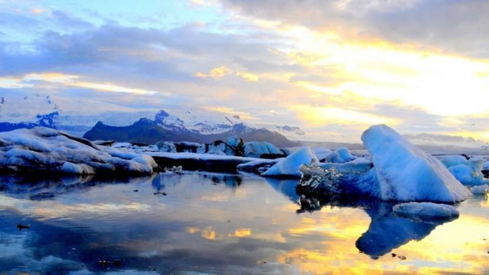
איסלנד, ארץ הקרח והאש, ארץ בראשית. נסענו בחודש יוני בקראוון ל-16 יום ,רצינו לראות פאפינים ולחוות לילות לבנים וזאת למרות המחיר היותר יקר של טיול "בעונה". כמובן שאלוהי מזג האוויר ממש היה ל"טובתנו" והטיול שלנו התאפיין ב-4 ימי שמש במצטבר מתוך 16 ימי הטיול. זכינו פעמיים לטייל בברד וסופת שלג וכן לחוות סופה ארקטית עם רוחות שכמעט הפכו לנו את הקראוון אבל כמו שאמרו לנו באיסלנד : אף אחד לא מגיע לאיסלנד בשביל מזג האוויר" וזה נכון, למרות מזג האוויר ה"קיצי" משהו זה היה אחד הטיולים הטובים ביותר!
איסלנד תמיד הייתה פנטזיה אצלי, עוד כשהייתי קטנה ואז בשנת 2012 ראינו תוכנית בניישנל ג'יאוגרפיק על איסלנד ומיד החלטנו לשם אנחנו נוסעים.
אחרי החתונה רצינו לעשות ירח דבש באיסלנד בקראוון אבל היינו כבר בחודש יולי וכשראינו את מחירי הקראוונים לחודש אוגוסט חשכו עינינו והבנו שירח דבש באיסלנד לא יהיה והטיול נדחה (את ירח הדבש אגב עשינו בנורבגיה במקום).
אבל על חלום איסלנד לא ויתרנו וכבר בינואר 2014 התחלתי לחפש טיסות וקראוונים, התלבטנו ארוכות אם לנסוע לקראת סוף אוגוסט או בתחילת יוני, בסוף הלילות הלבנים של חודש יוני הכריעו, וככה אחרי שהוזמן הקראוון והטיסה חפרנו באינסוף אתרים ופורומים תכננו וכססנו ציפורניים וחיכינו בכיליון עיניים ל-24 ביוני לתחילת הטיול!
לתמונות של לגונת הקרחונים:
https://www.flickr.com/photos/127066806@N05/sets/72157647565768085/
לכל התמונות מהטיול:
https://www.flickr.com/photos/127066806@N05/sets/72157646393795809/
24.6- בדרך לאיסלנד עוצרים באמסטרדם
ממריאים מוקדם בבוקר על אל-על לאמסטרדם, יש לנו 12 שעות שלמות לבלות בעיר ובכך להתחיל את החופשה שלנו. נחתנו ב-10 בבוקר לפי זמן מקומי וטיסת ההמשך עם איסלנדאייר יוצאת ב-22:30. אחרי ששוטטנו להנאתנו באמסטרדם הגענו מוכנים לטיסת ההמשך, בחוץ אור יום מלא, אנחנו אחרי לילה לבן קורסים לישון במשך שעתים של הטיסה שעוברת בנעימים. לקראת הנחיתה אני מקווה לראות את היבשה אבל מה שמקדם את פנינו זה מעטה עננים כה סמיך שרק כשהמטוס נוגע בקרקע שמים לב לקצת ירוק של הדשא. יוצאים לדיוטי-פרי (יש דיוטי גם לטיסות נכנסות) ולמי שרוצה להצטייד ביינות ואלכוהול זו ההזדמנות, באיסלנד לא מוכרים יין או וויסקי בסופרים אלא רק בחניות יעודיות לכך. לאחר שהצטיידנו ביין לכל הטיול הולכים לאסוף את המזוודות. להפתעתנו דווקא 2 המזוודות הגיעו (מפתיע מאוד בהתחשב בסיפורי הזוועה ששמענו על הנטייה של המזוודות ללכת לאיבוד בדרך לאיסלנד) אבל התיק עם החכות לדיג נשאר באמסטרדם ויגיע רק מחר אחרי 16:00. טוב נו, השעה 1 בלילה, בחוץ ערפל גשם וריח גופרית מקדמים את פנינו, אנחנו מחפשים את השאטל של ה-B&B (הזמנתי מראש לינה להלוך ב-keflavik airport B&B בעלות של 680 ש"ח לזוג כולל ארוחת בוקר. אחרי נסיעה קצרצרה הגענו. החדר ממש טוב, גדול, מיטה מרווחת מקלחת עם מים חמים וזרימה טובה וקדימה לישון, מחר (או שכבר היום?) מקבלים את הקראוון ומתחילים.
25.6- כבר ביום הראשון משנים תוכניות
תעוררנו ב-8 בבוקר שעון מקומי (הבדל עם איסלנד זה 3 שעות אחורה כלומר בארץ השעה 11) יקיצה טבעית למרות שלילה קודם לא ישנו כלל, בחוץ אור, ערפל וגשם, איזה כיף קיץ איסלנדי בשיא תפארתו. אנחנו אוכלים ארוחת בוקר ומחכים לשעה 9 - לאיסוף שלנו לקחת את הקראוון.
השכרת קראוון היא לא דבר זול בכלל - ל-16 יום עלה לנו 3500 יורו. את ההזמנה עשינו דרך "בנדנה קראוונים" שנתנו שירות מצויין, והחברה היא Touring cars (חברה מעולה - אפרט בהמשך). בדיוק ב9 בבוקר מגיע נציג החברה ולוקח אותנו לתחנת ההשכרה. שם אנחנו רואים סרטון קצר המסביר איך לתפעל את הקראוון ובהמשך עוברים פריט פריט ברכב עד שאנחנו מרגישים בטוחים. הזמנו קראוון SMALL וקיבלנו אחד בדגם הכי חדיש שהגיע במיוחד מפינלנד...בשביל זוג הקראוון הזה בסדר גמור קומפקטי ונוח וממש לא צפוף.
בגלל שאנחנו צריכים לקפוץ לשדה ב-16:00 ולקחת את התיק החסר, אנחנו משנים תוכניות ומחליטים להצטייד בסניף בונוס הקרוב (הרשת הזולה לקניות באיסלנד, ניתן בקלות לזהות ע"י עגלת קניות וחזיר ורוד) ולטייל בחצי האי רייקאנס. במקור תכננו לנסוע למעגל הזהב, אבל אחרי ההדרכה שסיימנו ב-12 וההצטיידות וקניית סים מקומי (מומלץ ביותר! ניתן לקנות בעיירה רייקינסביר ליד השדה בסניף של SIMIN או לקנות כבר במטוס, לצערנו בטיסה שלנו לא היו סימים עם גישה לאינטרנט אז לא קנינו) השעה היתה כבר 14:00.
אגב באותו היום גם השתוללה סופה באיזור גייזיר והזהירו אותנו שלא לנסוע לשם עם הקראוון בגלל הרוחות החזקות מאוד. אם עד כה חשבנו שרוח זה בריזה נעימה אז באיסלנד רוח מתגלה ככוח הרסני ממש. אנחנו נוסעים לכיוון העיירה HAFNIR והגשר בין 2 היבשות ומרוב הרוח הרכב ממש סוטה לנתיב הנגדי, בהתחלה חשבנו שחסר אוויר בגלגלים עד שהסתובבנו ושוב הרכב סטה עם הרוח - וזה קראוון גדול! עוד טיפ מומלץ זה להוריד את האפליקציה של מזג האויר ושם תקבלו התרעות על כבישים מסוכנים או רוחות ואזהרות נסיעה - גם ביוני היו הרבה כאלה.
חצי האי רייקנס הוא אזור שוקק פעילות גיאוטרמית, 4 ק"מ דרומית לעיירה הפניר (Hafnir) נמצא הגשר בין שתי היבשות - אמריקה ואירופה. את הלוחות הטקטוניים רואים כבר מהכביש וכשיוצאים מהרכב מכה בנו הרוח וריח הגופרית. האתר עצמו חביב למדי אך ממצה תוך 10 דקות (זאת אני אומרת בדיעבד אך אם מתחילים משם מתלהבים מכל סלע שחור ומהלוחות הטקטוניים הבולטים).
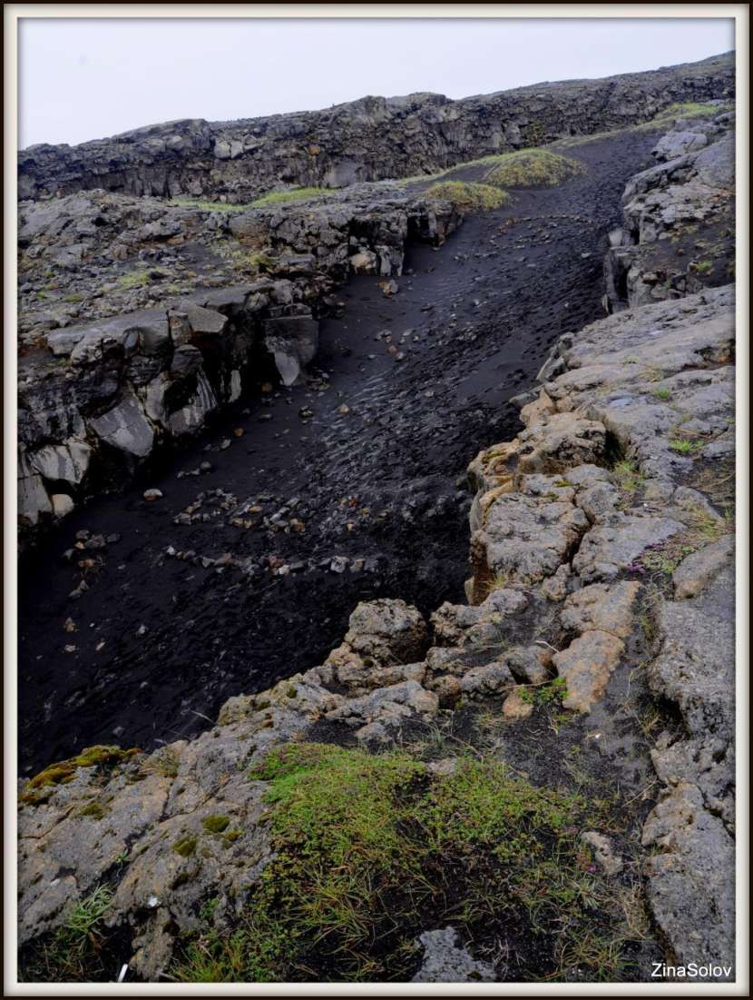
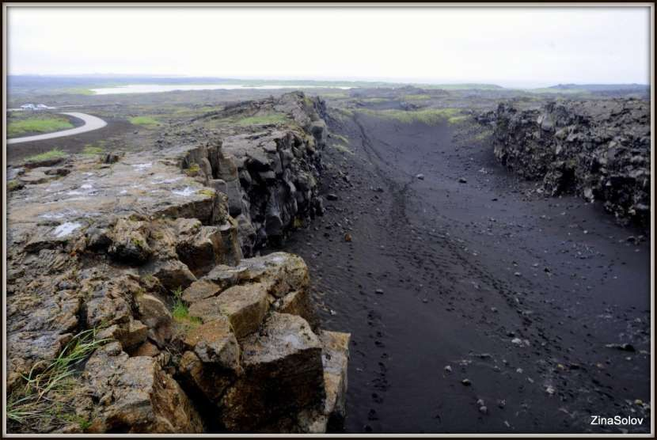
אחרי שחצינו את הגשר אנחנו ממשיכים על הלוח האירופאי (המזרחי, בעוד רייקיויק נמצאת באמריקני) לכיוון המגדלאור של רייקנס (נסיעה של כ-20 דקות). האתר יפיפה. המגדלאור נמצא ליד שדה גיאוטרמי ומפעל אנרגיה שמנצל את הקיטור. עשן עולה מכל בקע באדמה והמגדלאור נמצא על גבעה מוקפת עשן. ניתן לטייל לתצפית על השדה ולהגיע ברגל למגדלאור (לא עשינו כי היה קפוא בחוץ), ניתן להגיע גם לאגם המלאכותי (נוצר כפסולת של המפעל ובעל מים בצבע טורקיז מהמם).
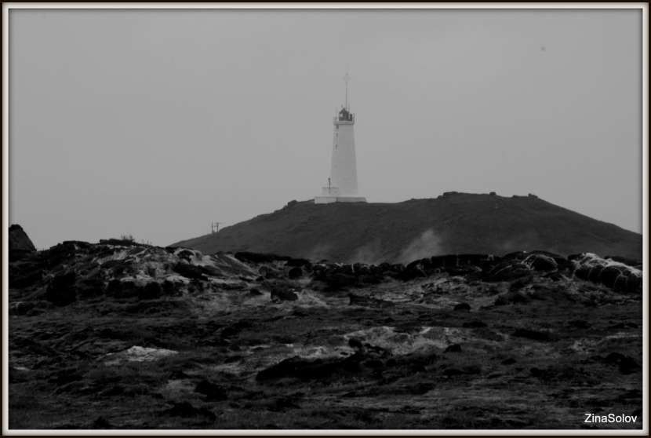
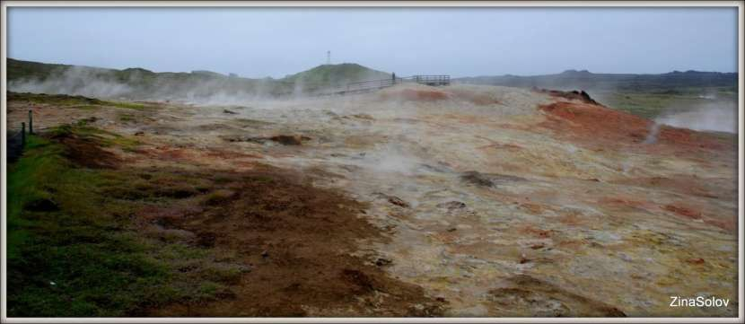
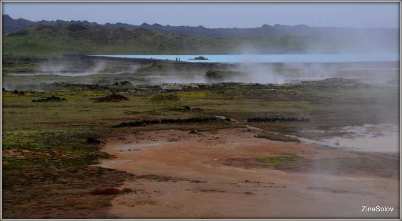
משם אנחנו חוזרים לשדה ואוספים את התיק החסר. השעה כבר 17:00 די ברור שאת מעגל הזהב לא נעשה היום (למרות שאין מגבלת זמן, יש אור כל הלילה ,אבל אנחנו כבר די עייפים) החלטנו לנסוע לעיירה hverager המפורסמת בחממות שלה ולעשות בלילה את המסלול של העמק המעשן (ריקדאלו). משדה התעופה לעיירה יש כשעה וקצת נסיעה, עדיין הכל מעונן אך הנופים מרשימים.
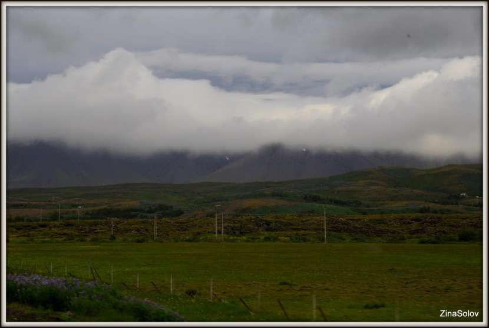
העיירה מוקפת בבקיעים ובורות מעלי עשן. כדי להגיע למסלול צריך לנסוע עד מגרש הגולף (3 ק"מ בכביש עפר די טוב). הגענו בשעה 18:30 ואנחנו גוועים ברעב, אין גשם אז מצאנו לנו פינה בחיק הטבע, הוצאנו את המנגל וכמיטב המסורת עשינו על האש טעים במיוחד. כמובן שאחרי האוכל לא נשאר לנו כוח לכלום אז ב-11 (מבחינת הגוף שלנו כבר היה 2 בלילה) כבר הלכנו לישון, החלטנו שאת המסלול נעשה בבוקר. איך מצליחים לישון כשיש אור? למזלנו בקראוון יש וילונות אטומים אבל עדיין יש אור יחסית, לקח לנו שבוע להתרגל לזה שיש אור בלילה ולהבדלי שעות, כי למחרת כבר בשש בבוקר אנחנו מתעוררים.
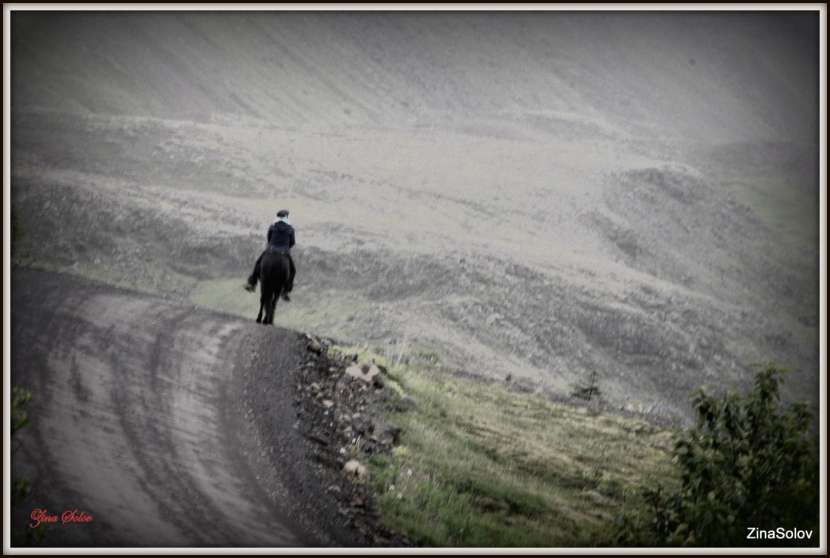
26.6- תמרות עשן
התעוררנו ב-6 בבוקר (יקיצה טבעית) בחוץ כבר אור יום מלא (גם בלילה לא היה בדיוק חושך), עדיין מתעצלים לקום החלטנו למשוך את הזמן עד שבע, קמנו הכנו נשנוש בוקר וקדימה למסלול.
בחוץ יום סגרירי ומעונן אבל אין גשם. מסלול הרייקראדלו אורך 3 ק"מ ולא קשה במיוחד. כל המסלול עובר ליד נהר חם שבהמשך מתמזג עם נהר קר ושם במפגש זה הדובדבן שבקצפת של המסלול- מים חמים שאפשר לרחוץ בהם! אנחנו מצוידים במגבות ובגדי ים (כבר מתחת לחסוך בחשיפה לקור). המסלול מתחיל בעלייה מתונה של כחצי שעה עם נופים משגעים על כל העמק המעשן מכל עבר תמרות עשן והמוני כבשים מסתובבות באחו.
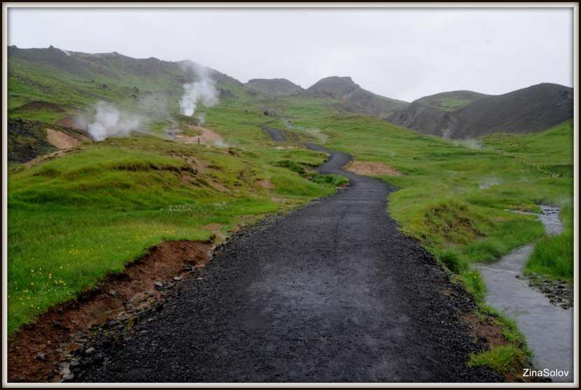
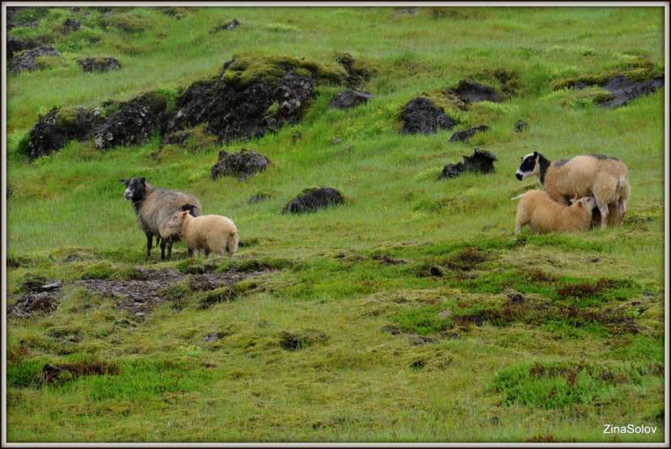
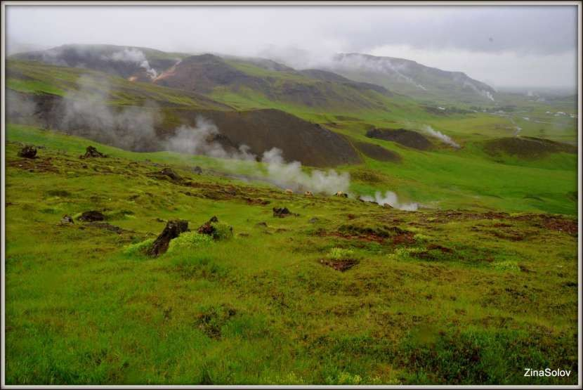
השעה 8 בבוקר ואנחנו לבד במסלול. אחרי עלייה מתונה גילינו ששכחנו לקחת איתנו מים, אבל התעצלנו לחזור ואז נזכרתי שבעצם המים באיסלנד מעולים לשתייה וניתן לשתות ישר מהנחל כל מה שצריך זה למצוא נחל עם מים קרים (ולא חסר כאלה גם במסלול הזה). אחרי הליכה של כחצי שעה (עם המון עצירות לצילומים) מגיעים לנהר החם (יש המון שלטי אזהרה שהמים שם רותחים ואכן עולה עשן מהמים, אל תהיו חכמולוגים ותכניסו ידיים/רגליים לבדוק עד כמה זה חם, לא מזמן קראתי שהיה תייר גאון שהכניס את כל הרגל פנימה ופונה משם במסוק אחרי שנכווה קשה מאוד ברגל). אחרי צעידה של כשעה מגיעים לפתחים מעשנים ועולה משם ריח גופרית, ממש אחרי זה- כ5 דקות הליכה נמצא המקום לרחצה. אין שם שום שילוט, אבל כבר תזהו את המקום כי הלאה אין באמת שביל אלא שבילון קטנטן למי שממשיך הלאה לפנים האי. זה הזמן לקפוץ למים, מתפשטים מהר מהר – קור אימים ואז פשוט רצים למים, ואיזה כיף... מים חמים כ-30 מעלות ובחוץ בקושי 10... ואנחנו לבד בכל האזור (פרט לכמה כבשים משוטטות).
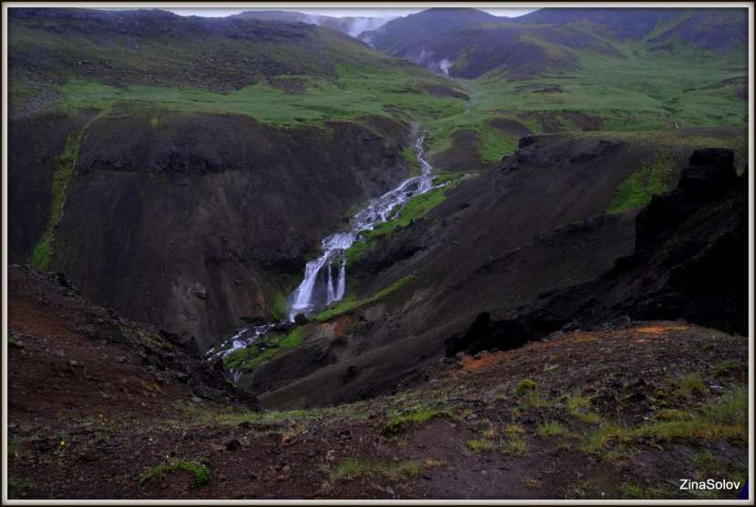
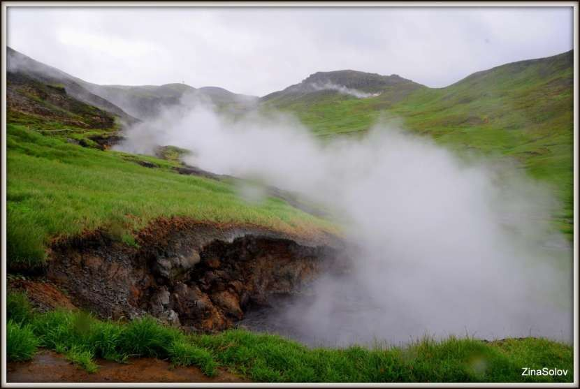
אחרי רחצה מתנגבים היטב, מתלבשים טוב טוב ומתחילים ללכת חזרה. בדרך אנחנו כבר פוגשים את המטיילים הראשונים במסלול. חזרנו לקראוון החמים שלנו בשעה 12 וזה הזמן לאוכל, כאן היתרון האדיר של קראוון, אוכלים מתי שרעבים ונחים כשעייפים, לא צריך לנסוע לשום מקום ולחפש מסעדה. מחליפים בגדים, עושים מקלחת זריזה אוכלים ונוסעים להשלים מצרכים בעיירה.
נכנסנו לתחנת דלק למלא מים בבקבוקים ופה נכונה לנו הפתעה, באיסלנד יש כלכך הרבה מים שבכל תחנת דלק ניתן למלא מים בקראוון עם צינור בחינם! ולא רק זה, יש עמדות עם מגב ניקוי מחובר לצינור לשטיפת הרכב, איפה בארץ שוטפים עם צינור ועוד בחינם???
משם ממשיכים לתחנה הבא: פארק טינגווטליר (כשעה נסיעה מהעיירה), בחוץ עדיין ממש סגרירי ומעונן וממש מרדים, אז מצאנו לנו נקודת תצפית יפה בדרך ועצרנו לשנת צהריים.
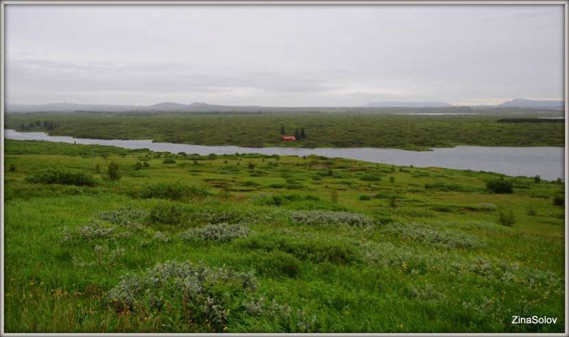
אחרי שינה נעימה קמנו, נשנשנו והמשכנו לפארק אליו הגענו בשעה 18:00. ה-GPS הוביל אותנו מהכניסה האחורית לפארק (איזור הצלילה) אז זכינו לראות את הלוחות הטקטוניים מלמטה והמראה ממש מרשים (הרבה יותר מאלה בעיירה הפניר). טיילנו קצת בפארק שהוא די מתוייר, אפילו בשש בערב היו שם די הרבה אנשים (לא רוצה לדמיין מה הולך שם בשעות הבוקר).
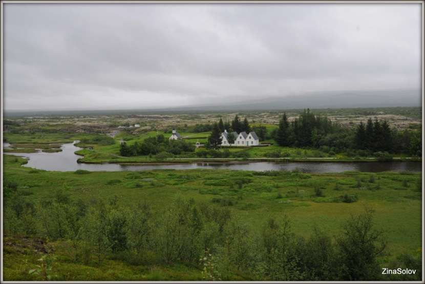
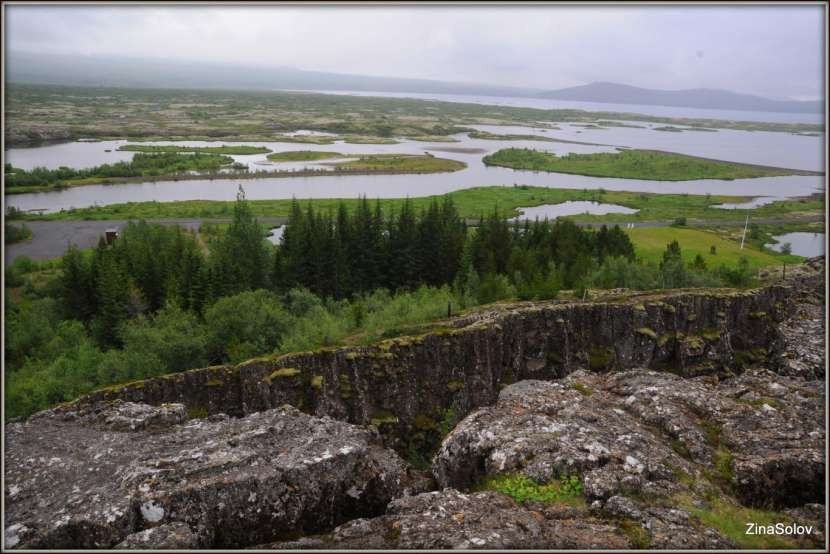
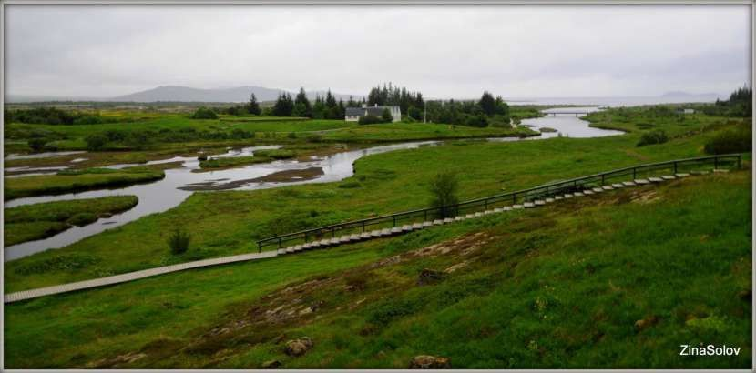
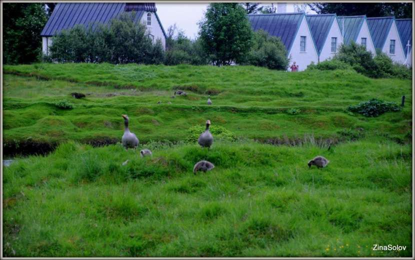
אחרי כשעה די מיצינו והמשכנו לכיוון גייזיר. הגענו לשם בשעה שבע וחצי בערב, המקום היה יחסית ריק. מכל עבר עולות תמרות עשן, שמנו פעמינו ישירות לסטוקור – הפעיל ופתאום סילון מים אדיר יוצא מהקרקע וישירות עלינו, אנחנו וכל מי שעמד בטווח מייד מתחילים לברוח מזרם המים הרותח.
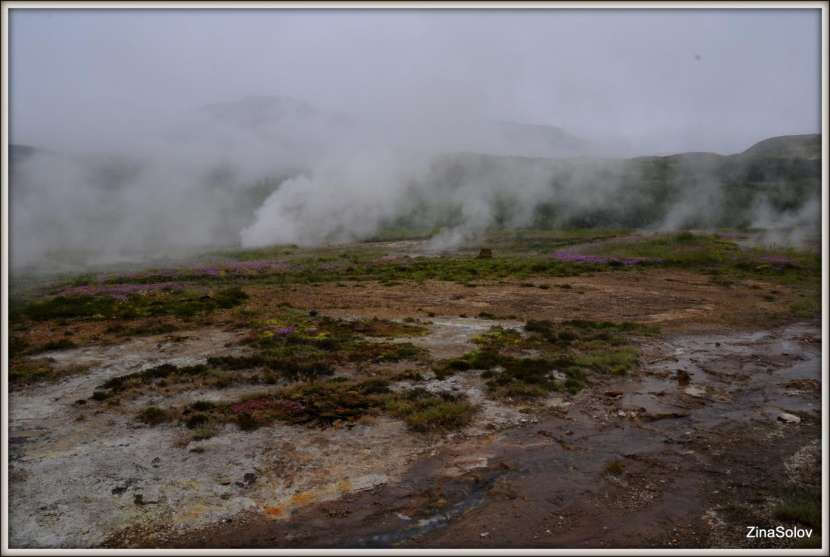
בהמשך מצאנו לנו מקום קצת פחות "רטוב" וחיכינו להתפרצות הבאה (כל 5-8 דקות בממוצע, יש גדולות ויש התפרצויות ממש קטנות), בגלל האובך ובערפל ממש היה קשה לצלם את ההתפרצות אבל זה מה יש...
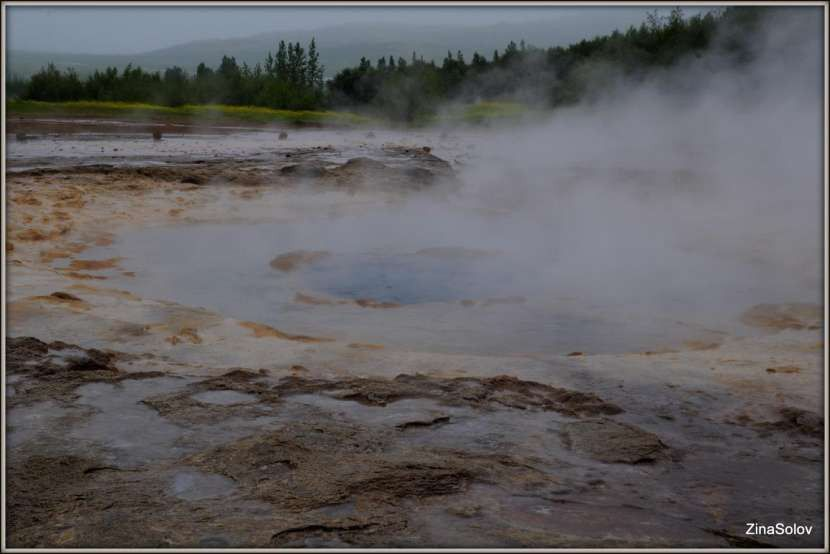
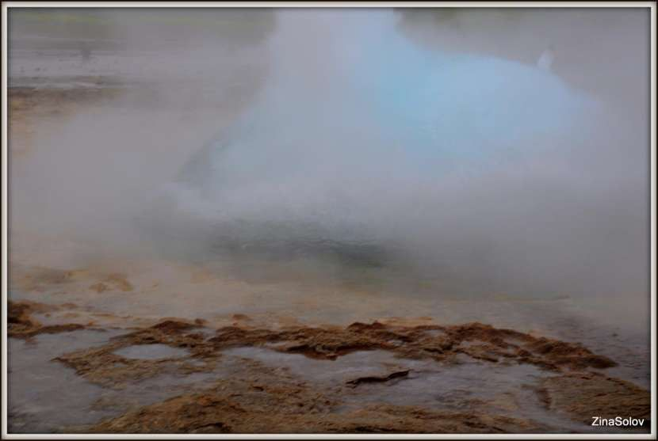
ראינו גם את גייזר המקורי שכבר לא מתפרץ ועוד בורות מבעבעים או בורות עם מים כחולים/טורקיז, ניתן לעלות גם לגבעה ולראות את כל העמק אבל די הבנו את הרעיון, מה גם שבחוץ קור אימים אז החלטנו לוותר והמשיך לתחנה הבאה- מפל גולפוס.
מפל גולפוס מאוד מרשים, למזלנו הערפל עלה מעט וניתן לראות את כל המפל (ללא הקשת כי השמש אי שם מתחת למעטה העננים). ניתן לטייל ממש עד למפל – ויתרנו בגלל הקור והרוח, אז טיילנו בשביל העליון וראינו את המפל והעמק. השעה שמונה וחצי ואיתנו באזור מטיילים רק עוד 2 זוגות – זה היופי בקיץ, לא משנה מה השעה תמיד יש אור וניתן לטייל בשעות מאוחרות ופחות אנשים.
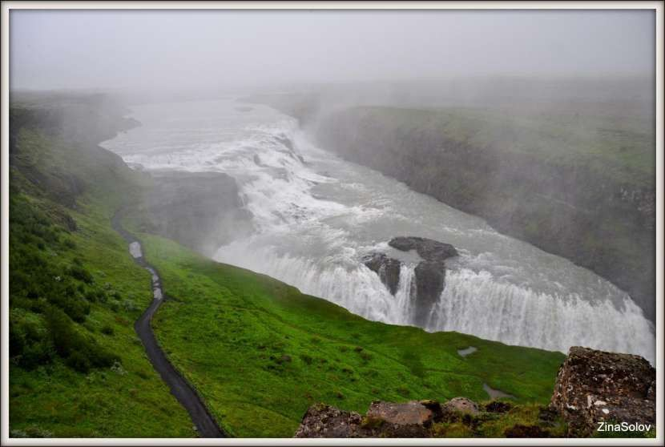
טיילנו חצי שעה שם, וקרקורי הבטן הניסו אותנו לקראוון לארוחת ערב. השעה 22:00 בחוץ אור מלא, אנחנו בהתלבטות האם לנסוע כבר היום למפלי סליאלנדפוס (כי מחר נוסעים משם לתורסמורק) או לחכות לבוקר, החלטנו לנסוע עכשיו מקסימום נעצור באמצע הדרך לישון ובכך נחסוך את הנסיעה מחר.
הדרך יפיפה! כפרים קטנים וברקע הרי הגעש עם הפסגות הקרחוניות. אנחנו מגיעים למפל ב- 12:30 בלילה, בחוץ אור. את המפל רואים כבר מהכביש. אנחנו מתמקמים בחנייה והולכים לישון בנחת.
לסיום תמונה קטנה על עמק הגייזרים כשחוזרים ממפל גולפוס
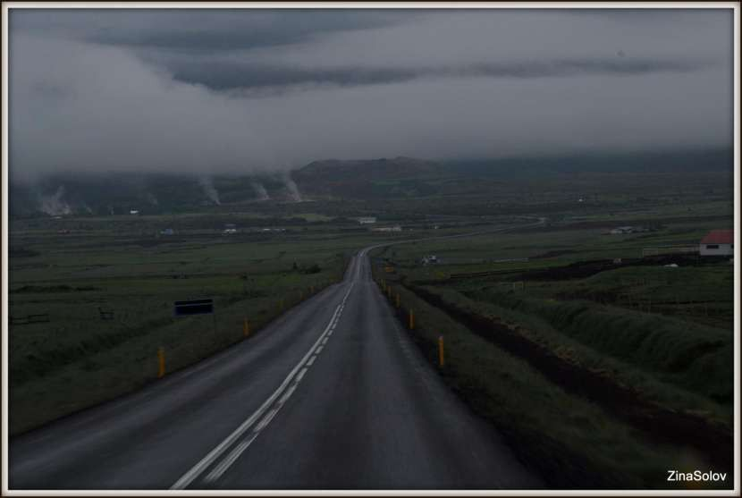
27/6 – העמק של תור
כרגיל אני מתעוררת בשש בבוקר, לוקחת את המצלמה והולכת לבחון את המפל (רק אני שם ועוד זוג גרמנים) אחרי שצילמתי המון תמונות, בעלי כבר התעורר ויש ארוחת בוקר. האוטובוס לתורסמורק יוצא ב-10:45 מהחנייה, אנחנו קונים כרטיסים בדוכן בחנייה (הלוך וחזור 16000 ISK לזוג) ואנחנו יוצאים לגיחה שנייה למפל.
מפל סליאלנדפוס
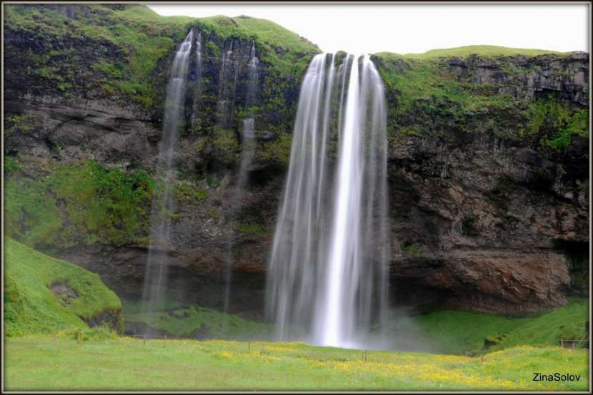
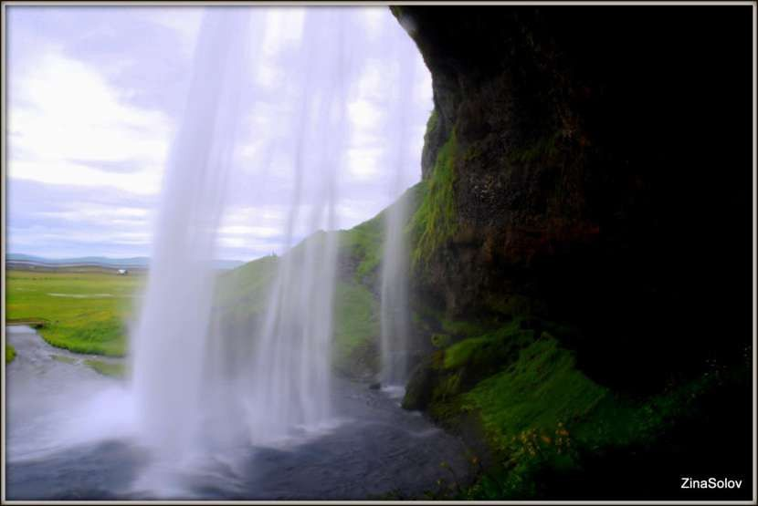
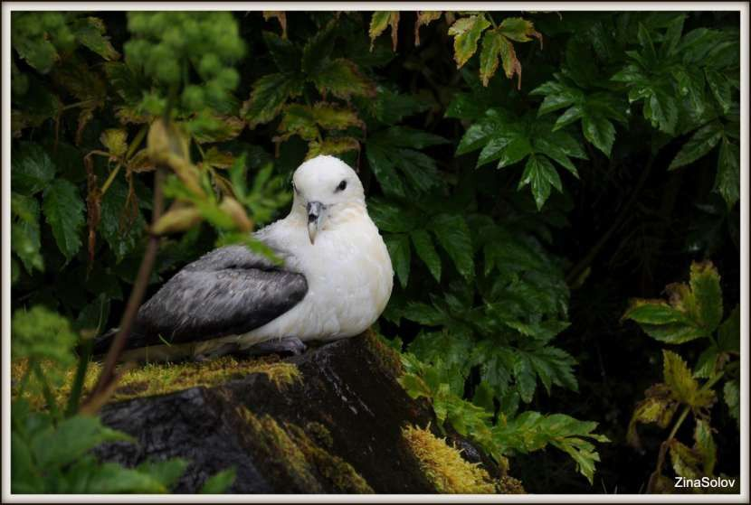
ב-9 בבוקר המקום כבר הומה אדם עד כדי כך שקשה למצוא חנייה (מזל שחנינו שם כבר בלילה). התעצלנו להגיע למפל השני שבהמשך קראתי שצריך להצטופף בנקיק צר עד שמגיעים אליו (בדיעבד די פספוס אבל לא נורא). כבר ב-10:20 האוטובוס מגיע וחונה בחנייה, מדובר בסופרבוס- אוטובוס עם גלגלי ג'יפ ו-4X4 (בניינו בדיוק כמו טיולית צבאית).
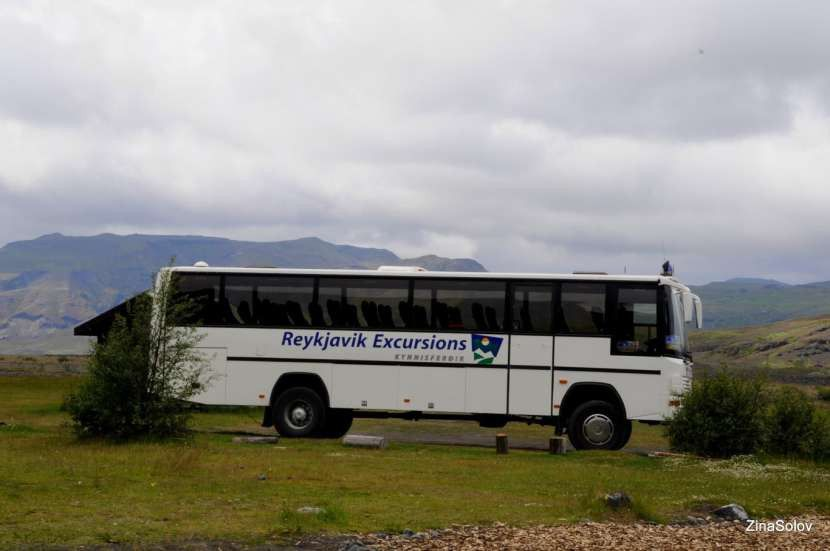
ב-10:45 בדיוק הוא יוצא. היום יש לנו מזל, השמים מתבהרים והשמש סוף סוף מראה את עצמה. אנחנו נכנסים לעמק ובדרך חולפים על פני האייפייטליוקול (המפורסם מ-2010), ברקע הרים מושלגים ונהרות שנראים כמו ורידים. אחרי כשעה נסיעה וחציית נהרות (קטנים יחסית) אנחנו מגיעים לקרחון. שם יש לנו עצירה של 15 שעה.
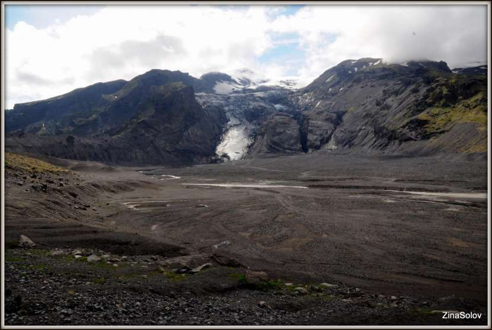
לפני 2010 הייתה לגונה מתחת לקרחון אבל עקב ההתפרצות נוצר שיטפון אדיר שפשוט שטף אותה לגמרי. אין מספיק זמן להגיע עד הקרחון, מטיילים ליד, מצלמים וממשיכים הלאה.
ממש לפני הכניסה לפארק חוצים את הנהר הקשה ביותר – הקרוסה. במראה ראשון לא נראה כזה מפחיד או עמוק אבל כשמסתכלים למרכז רואים את הזרימה החזקה. האוטובוס יודע איפה לחצות (עושה את המסלול לפחות פעמיים ביום), ובכל זאת נתקלנו בג'יפ שהחליט לחצות לפני האוטובוס, נכנס לנהר מזווית לא נכונה והתחיל להיסחף בזרם. למזלם באמת היום לא היה זרם כל-כך חזק ואחרי כמה מטרים של היסחפות הם הצליחו לצאת, וכשפתחו את הדלת כל המים נשפכו... הג'יפים האחרים העדיפו לחכות לאוטובוס. לאוטובוס כמובן אין שום בעיה לחצות וב-12:00 אנחנו מגיעים לתחנה שלנו (Husaladur), שימו לב האוטובוס ממשיך לעוד תחנות בפארק אבל למי שרוצה לעשות את המסלול היומי הקצר זו התחנה.
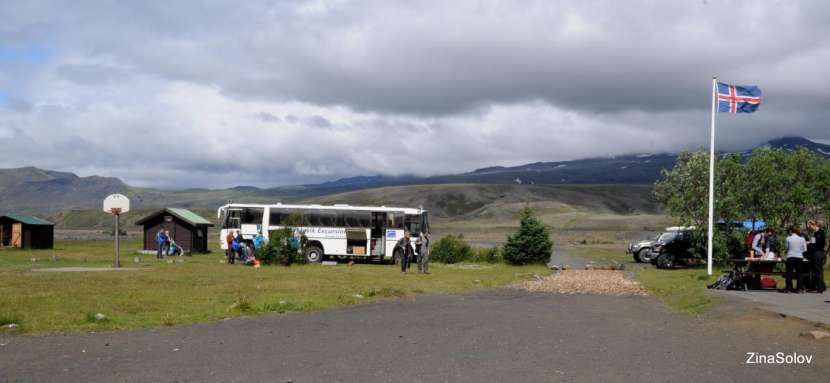
לקחנו איתנו סנדוויצ'ים ואחרי נשנוש אנחנו מוכנים לצאת לדרך. המסלול שלנו הוא לפסגת ההר Valahnjukur מסלול מעגלי. אנחנו התחלנו אותו מהסימון הלבן ליד הבקתה ודרך היער (לדעתי כדאי יותר כי דווקא הרוב מתחילים מהצד השני – הליכה במישור ואז טיפוס, אנחנו עשינו הפוך והיינו לבד בחלק הזה של המסלול).
יער איסלנדי:
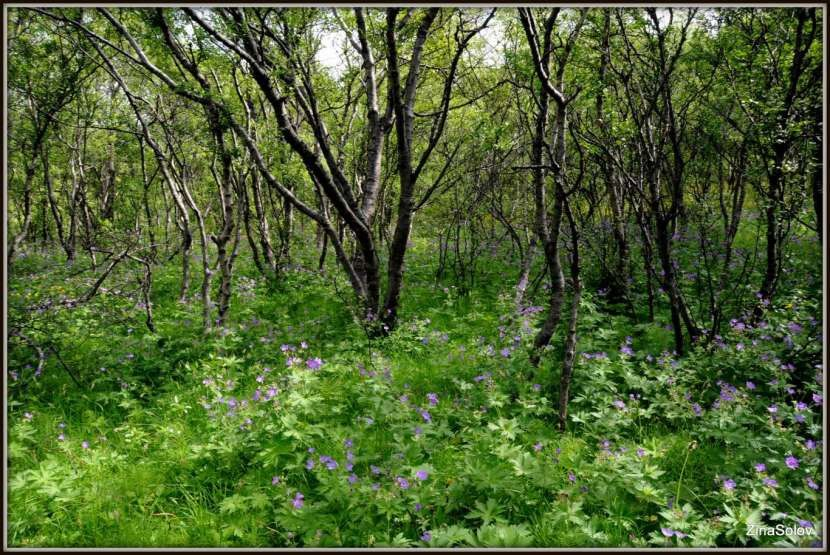
המסלול מתחיל בטיפוס בתוך יער (נדיר לאיסלנד), כשיוצאים מהיער יש נוף מהמם של הרים מושלגים ונהרות. אחרי שעה וקצת הליכה ועצירות מגיעים לפסגה (הטיפוס לפסגה לא קל ודי תלול אבל הנוף שווה את המאמץ). בפסגה אנחנו כבר לא לבד, אבל הנוף כל-כך יפה שאנחנו נשארים שם חצי שעה (כולם כבר עוזבים).
קצת מהנופים במסלול:
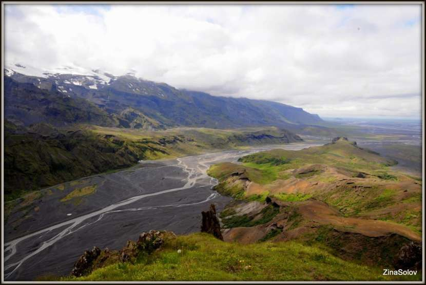
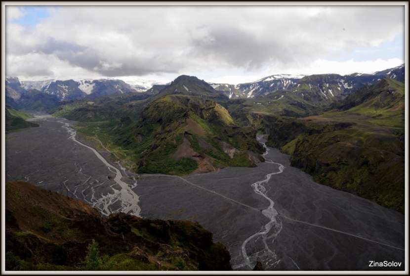
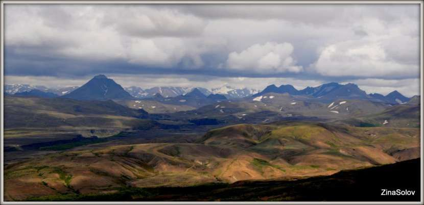
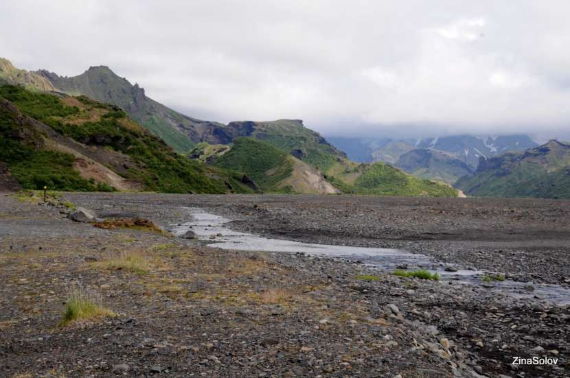
אחרי מנוחה על הדשא וכששבענו מהנוף אנחנו יורדים. כאן בעלי מתחיל להילחץ כי אנחנו רואים בקתה אבל היא בצד השני לזה שאנחנו צריכים, אני מרגיעה אותו שמקסימום נחזור למעלה אבל בטוח יש דרך מסביב, ואכן כשירדנו לבקתה הסבירו לנו שזה בסך הכל הליכה של רבע שעה ל- Husaladur.
בבקתה שהגענו אליה Langidalur עוצרים מי שמסיים את הטרק המפורסם וגם משם יש אוטובוס בשעה 15:00. אנחנו נחים שם קצת, מטיילים ליד נהר הקרוסה ומתרשמים מההרים והקרחונים, בסוף החלטנו להמשיך לבקתה הראשונה (מסלול כחול לבן). הגענו ב15:30, נחנו ולאוטובוס חזרה.
לכל החוששים את המסלול אפשר להספיק ב-4 שעות (עשינו ב3 שעות עם המון עצירות והליכה נינוחה), וגם בקיץ יש אוטובוס שיוצא ב-20:00 ככה שאין מה לדאוג. לדעתי כדאי אפילו להזמין שם לינה ולטייל כמה ימים באזור הוא פשוט משגע!
ב-17:15 הגענו לחנייה של סליאלנדפוס ואין מקום לנשום, הכל מפוצץ רכבים ותיירים, מזל כשבר ראינו וטיילנו שם בבוקר... בחוץ שמש ככה שהכל נראה יפה יותר. ואנחנו ממשיכים לסקוגר לחניית לילה, בדרך עוצרים לעוד תמונה של האייפילייוקול.
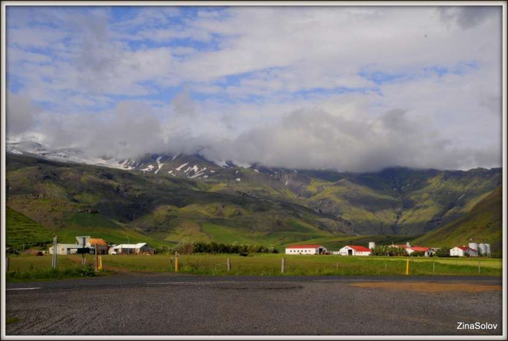
הקמפינג בסקוגר ממוקם ממש ליד המפל, משלמים בבקתה ליד (מסעדה ומלון) אבל מאוד לא נוח לרוקן שם מים. אנחנו עייפים ורעבים אחרי המסלול וביום יפה כמו זה חייב לעשות על האש... אחרי שאכלנו ושבענו הלכנו לראות את המפל המרשים הזה. השעה 23:00 והשקיעה רק מתחילה... ניתן לעלות למעלה ולתצפית על המפל אבל החלטנו לעשות את זה בבוקר.
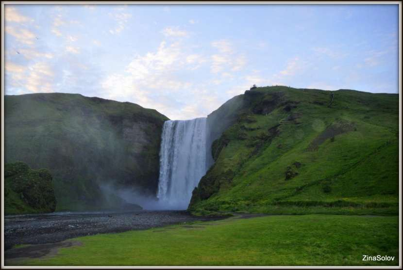
28/6- שדות לבה
שוב קמים בשבע בבוקר, הפעם עוד לפני האוכל אנחנו מחליטים לטפס למעלה לתצפית על המפל. כ-400 מדרגות מובילות עד לפסגה וממנה ניתן להשקיף על המפל. ניתן גם לחצות את הגדר ולטייל לאורך נהר הסקוגה (למי שעושה את הטרק עד סקוגר מגיע מהכיוון הזה). שוטטנו קצת לאורך הנהר משם רואים ממש טוב את האייפייטליוקול (אבל פסגתו מכוסה עננים למרות שיש שמש). הנוף מלמעלה מהמם, נהר הסקוגה נראה כמו סרט שחור על רקע שדות ירוקים וסגולים. ירדנו, אכלנו ארוחת בוקר ויצאנו לדרכנו.
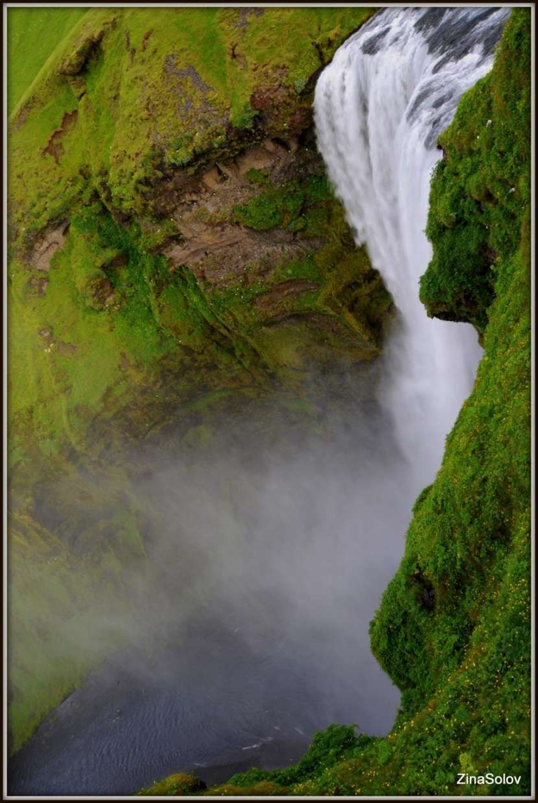
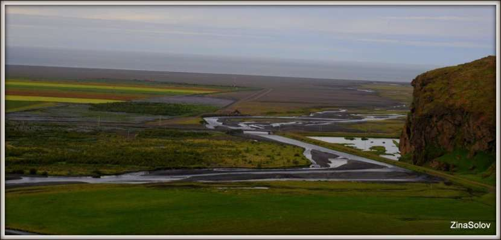
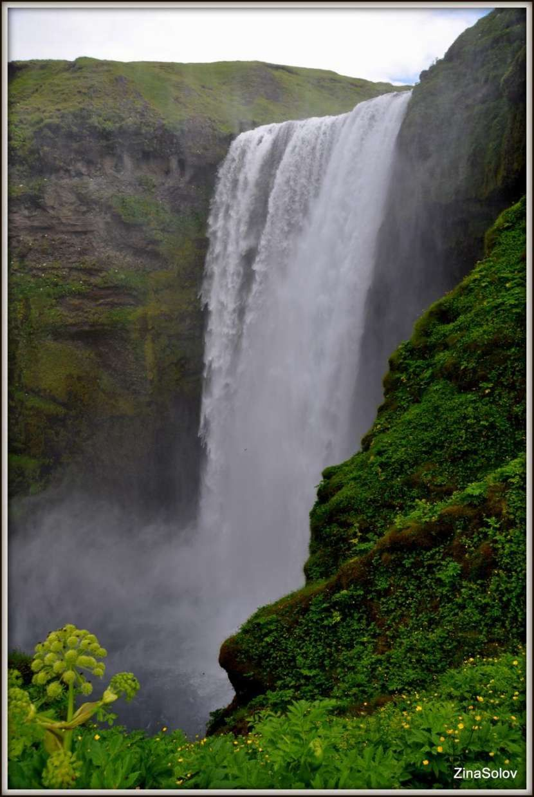
ממש ליד המפל יוצא כביש 221 לקרחון סולהמניקול עליו ניתן לעשות הליכה, אנחנו הסתפקנו בלראותו מהכביש כי שמענו סיפורי זוועה על ארבעת הקילומטרים של הכביש הנוראי הזה...ברקע רואים ממש טוב את קרחון המירדסיוקול (השני בגודלו באיסלנד).
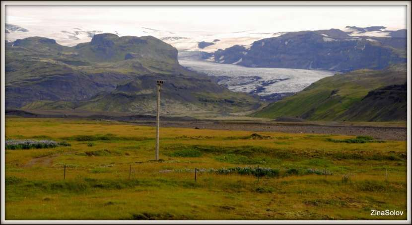
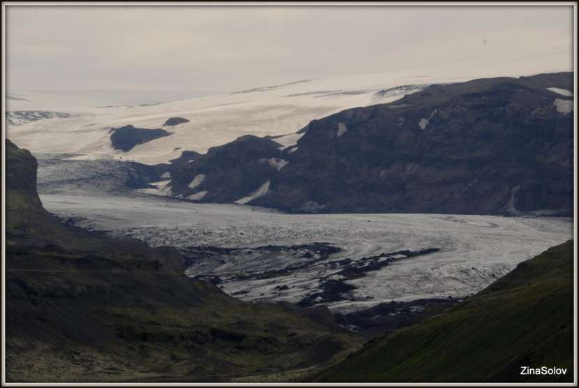
התחנה הראשונה היא צוקי דירהוליי, פונים בכביש 218 (סלול) ונוסעים עד לחנייה, למי שיש רכב קטן או גי'פ יכול לפנות מעט לפני החניה ולהגיע עד למגדל-אור ועד לצוק עצמו, אבל זו דרך שלא ניתן לעשות בקראוון, אם מגיע מישהו ממול זו בעיה קשה.
שוטטנו לאורך הצוקים המרשימים, ראינו עשרות ציפורים שונות (גם ממש קצת פאפינים שכן רובים היו בים בשעה זו), ניתן לרדת למערה ולטייל על קו החוף אבל הגלים היו די חזקים אז ויתרנו על הרעיון. מהחניה יש מסלול לכיוון המגדל-אור (מה שלא עשינו ברכב), עשיתי חלק ממנו לבד (בעלי המסכן חטף הצטננות והלך לנוח), המסלול עובר לאורך הצוק בנוף יפיפה – מצד אחד הקרחון ומצד שני האוקיינוס וברקע המוני ציפורים, עד למגדל-אור לא הגעתי (נשאיר קצת לפעם הבאה).
הייה לנו מזל כי זה בדרך כלל האזור הכי גשום באיסלנד ולנו היה יום שמש!
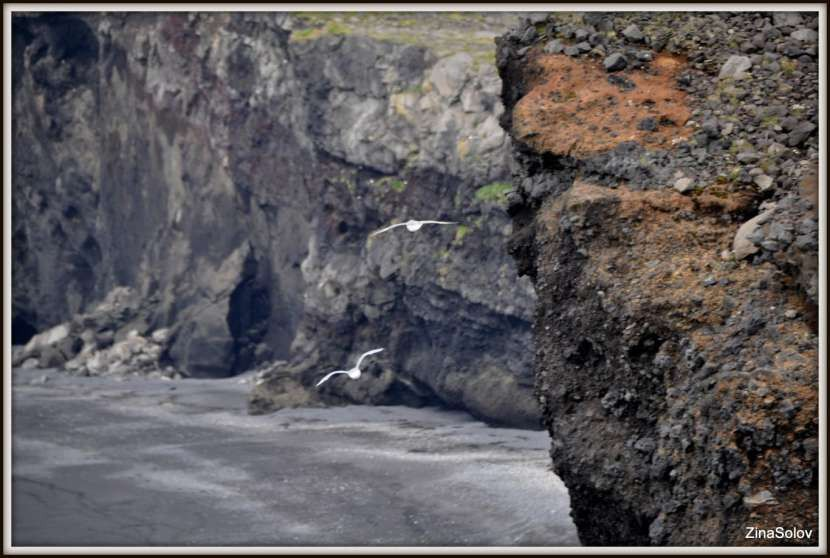
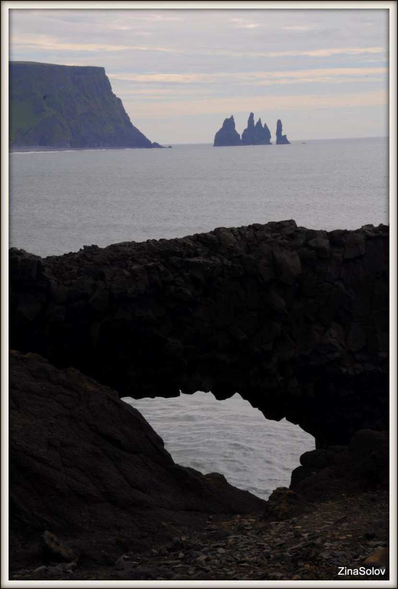
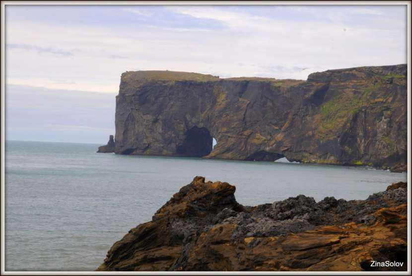
מספרים שפעם טייס אמיץ הטיס מטוס דרך החור הזה...
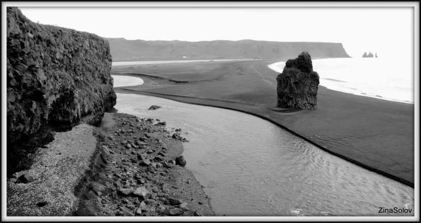
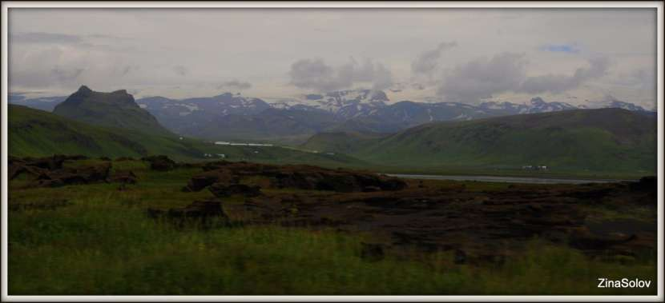
משם המשכנו לעיירה ויק (כביש 215) המפורסמת בזכות החופים השחורים שלה והצוקים Reynisdrangar.
נסענו ישירות לחוף, טיילנו שם קצת, המראה נראה כמו נלקח מהסרט "פארק היורה" ההר הירוק, הציפורים והים, תחושה שעוד רגע יגיע דינוזאור... התיישבנו על ספסל ליד החנייה ולידנו זוג גרמניות שמטיילות בקאמפר ששמחו ללמד את בעלי איך מכינים חביתת בייקון (הוא כמובן יישם מהר).
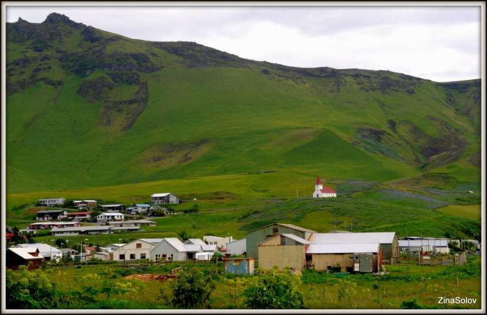
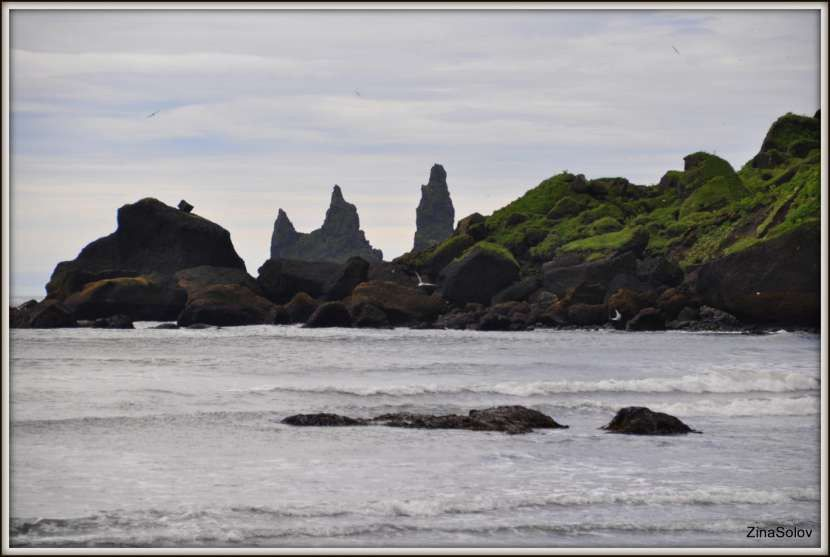
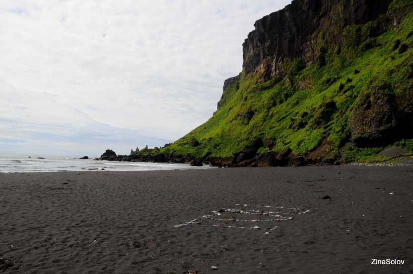
עצרנו בסופר הקטנטן של העיירה לקנות כמה מצרכים ובעוד אנחנו יושבים ברכב, בום, צעיר איסלנדי מתנגש בנו בשיא המהירות כשעושה רוורס (אנחנו עומדים חנייה), למזלנו לנו יש רק שריטה בעוד שהוא סבל מנזק רציני הרבה יותר לרכבו. מתקשרים לחברה, הם מסבירים שבגלל שאין נפגעים לא צריך להזמין משטרה אבל חייב למלא טפסים של תאונה שיש ברכב, רק מה הטפסים באיסלנדית! ומה קרה בסוף, הבחור שצעיר שנכנס בנו עזר לנו למלא את כל הטפסים, לחצנו ידיים וכל אחד נסע לדרכו (אנחנו שמחים שיש ביטוח ביטול השתתפות עצמית, בסוף אפילו לא חויבנו בכלום).
עלינו למעלה לתצפית ליד הכנסייה של ויק ומשם לתחנת הדלק כי יש נסיעה ארוכה יחסית לפנינו. תחנת הדלק הומה באוטובוסים מלאים בתיירים. כאן גם גילינו שכדי לתדלק צריך קודם לציין את הסכום, טוב אנחנו עושים בערך 300 ₪ זה כ-10000 קרונות , יצא מיכל כמעט מלא (אגב בהמשך גילינו שגם אם תזינו סכום גבוהה יותר הוא יחייב רק בסכום שתודלק בפועל, לך תבין הגיון איסלנדי).
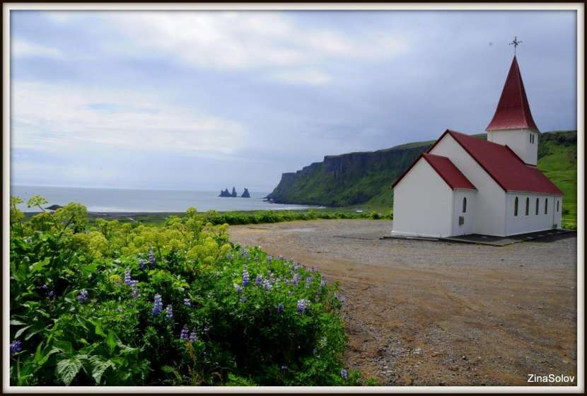
נוסעים הלאה והנוף משתנה בצורה קיצונית, אנחנו בשדה לבה בצבע צהוב ירקרק, בחוץ שמיים כחולים עם עננים לבנים, יופי שלא ניתן לתאר. ואז ראינו מולנו תחנת עצירה ולידה מישור ענק זרוע ב"רוג'ומים" וקרחון מירדסיוקול ברקע. החלטנו לעשות הפסקת צהריים ושנ"צ קצר, כשקמנו טיילנו באזור. מסתבר שמדובר בשרידים של חווה עתיקה שנחרבה בהתפרצות ההקלה (לפני מאות שנים), הרוג'ומים הם לאות מזל, מסופר שכל מי שעובר באזור חייב לשים אבן כדי שיהיה לו מסע מוצלח – וזה בדיוק מה שעשינו.
ממשיכים לנסוע לכיוון העיירה קירקי (בקיצור של Kirkjubarklaustur) ולקניון פיאדרה (קיצור של fjadragijufur). הדרך לקניון עוברת בחלקה בדרך לכיוון לאקי (כביש 206) אבל בהתחלה הדרך היא לא F וניתן הבחלט להגיע לקניון עם הקראוון (אם כי קצת לא נעים). הקניון נמצא 10 דקות נסיעה מקירקי (אם באים ממערב אז מעט לפני העיירה). אנחנו מגיעים מלמטה (מי שמגיע מלאקי מגיע מלמעלה).
בחוץ התאורה היא כאילו בהזמנה, שמש מאירה את הקניון והכל נראה זוהר ולא מציאותי. הקניון מהמם! ממליצה לכולם לא לוותר עליו. המסלול הוא הלוך וחזור, טיילנו עד החלק העליון וחזרה ונהנינו מכל רגע. ניתן להתקרב ממש עד לקצוות ולשולי הקניון (על אחריות המטייל). אחרי שעה וחצי של הליכה נינוחה אנחנו ממשיכים לתחנה הסופית להיום – קירקי.
קצת תמונות מהדרך ומהקניון:
העיירה פצפונת, מגיעים למרכז מהבקרים ומגלים שיש מסלול מאוד יפה למפל ואגם האחיות על הפסגה אך מחליטים להשאיר אותו לבוקר. בעלי רוכש כרטיס דיג (בעלות של 7000 קרונות, שמי, ויחד איתו חוברת המפרטת את האגמים שבהסכם. באיסלנד כל האגמים הם בשטח פרטי אז חשוב שיהיה היתר לדיג). אנחנו מקבלים הדרכה לאגם הקרוב (5 דקות מהעיירה) ושם כבר ישנים. אחרי ארוחת ערב אנחנו נהנים מדיג ושקיעה מהממת על האגם ונוף לעיירה (רק חבל שהברחשים ממש לא נותנים מנוח ונכנסים לכל חור- תרתי משמע) – אתן לתמונות לדבר בעד עצמן.
29.6- שקיעה קרחונית
התעוררנו לבוקר מעונן, אבל קצת עננים לא יעצרו אותנו. נוסעים שוב לעיירה קירקי לפתוח את הבוקר במסלול לאגם האחיות. עולים על הרכס שמעל העיירה ומשם מגיעים לאגם יפיפה עם נוף על העיירה ושדות הלבה ברקע, לא המשכנו במסלול לאורך הרכס. את ארוחת הבוקר החלטנו לאכול מול מקום יפה ואכן מצאנו כזה 10 דקות נסיעה מקירקי – מפל יפיפה.
שבעים אנחנו מוכנים לאטרקציות של היום- פארק סקאפטפל ולגונת הקרחונים לקינוח. הדרך לסקאפטאפל יפיפיה אך לצערנו אנחנו תחת מעטה עננים כבד, כך שלא רואים בכלל את הקרחון רק את מורדות הקרחונים אנחנו מצליחים לראות בקושי. הדרך עוברת בשדות לבה שמתחלפים במדבר שחור – הסאנדור, מרחבים אינסופיים של חול שחור ובקרע מורדות הקרחון ועננים אפורים, ממש תחושה של סוף העולם כאילו אנחנו בסרט אפוקליפטי.
הדרך עוברת על פני גשר ארוך מאוד (כל הגשרים באיסלנד הם חד סטריים- מחכים שמי שעל הגשר ירד ורק אז עולים עליו אחרת אין מקום לשני רכבים), התחושה היא שממש לא משקיעים בגשרים והוא נראה ממש רעוע, אבל די בצדק הגשר הנ"ל נהרס לגמרי בשנת 1996 בגלל התפרצות הר געש על הקרחון ושיטפון אדיר כתוצאה מכך שפשוט שטף את כל הגשר (שרידים שלו ניתן לראות על הכביש כמייצג).
לקראת השעה 12 אנחנו מגיעים לפארק (לא השעה הכי טובה, כדאי להגיע או מוקדם בבוקר או אחרי 17:00 כי יש שם פשוט המון אנשים). החלטנו לעשות את המסלול למפל svartifoss ומשם להמשיך לתצפית על הקרחון svinsjpa (סה"כ 7 ק"מ). המסלול ממש לא קשה והשילוט מעולה, קצת עלייה בדרך למפל (לא משהו קשה בכלל), לצערנו בגלל מעטה העננים הכבד לא רואים בכלל את פסגות ההרים ואת הקרחון אבל את המדבר בהחלט רואים והנוף יפיפה. ליד המפל אנחנו עוצרים לפיקניקון נחים קצת וממשיכים לקרחון, הנוף מהמם! העננים קצת עולים וניתן לראות את השלוחה שיורדת מהקרחון ובתחתיתה לגונת קרחונים קטנה (אגב ניתן גם ללכת ללגונה עצמה – ממגרש החניה כחצי שעה הליכה קלילה), כמו בשאר אתרי איסלנד, גם פה אין תיחום, רק שלט שמזהיר מפני נפילה, אתם יכולים לעמוד ממש על הקצה (על אחריותכם כמובן), אחרי עוד נישנוש אנחנו מתחילים ללכת חזרה (הדרך בירידה ועוברת דרך "יער" קטן). את כל המסלול עשינו ב-4 שעות.
מראה הסנדור מלמעלה:
מפל סוורטיפוס:
שלוחת הקרחון:
ממשיכים לקרחון ה-svinfell שממש ליד השמורה אבל לא נכנסנו עד אליו, דרך העפר לא נראתה מתאימה מי יודע מה לקראוון אז עצרנו להפסקה לקפה מול הקרחון.
משם המשכנו ללגונת הקרחונים הקטנה Fjallsjkull. המקום נמצא כ-10 דקות נסיעה לפני הלגונה הגדולה (לבאים ממערב למזרח) ויש שלט קטן המפנה אליה (ניתן בקלות לפספס אז שימו לב). הדרך עד הלגונה היא דרך עפר סבירה. הלגונה עצמה יפיפייה, ניתן להגיע עד שפת המים ולגעת בקרחונים, המקום הרבה יותר שקט ופחות מתוייר מהלגונה הגדולה, אז זה בהחלט קדימון מומלץ.
משם אנחנו נוסעים ללגונה הגדולה היוקוסלרון (האגם הכי עמוק באיסלנד אגב). הלגונה נוצרה בשנת 1930 בגלל הפשרה של קרחון ואטניוקול וממשיכה לגדול עד היום. היום אגב הסכנה היא שמי ים יחדרו ללגונה. אין ספק שזה אחד המקומות המרשימים ביותר באיסלנד. אנחנו החלטנו להישאר ללון בלגונה כדי לספוג את החוויה כמה שיותר (מומלץ למי שבא עם רכב מצויד ללינה, רק שימו לב שאין שירותים בקרבת מקום, רק בקפיטריה שנפתחת ב-9 בבוקר).
ישנו מגרש חנייה די גדול ולידו קפיטריה (שנסגרת ב-20:00) ממנה ניתן לקחת שיט ברכב אמפיבי או בזודיאק, אנחנו הגענו בערב אז האטרקציות יחכו כבר לבוקר. ממש מאחורי הקפטריה מקננות בהמוניהן שחפיות הקוטב שמספקות המון רעש לרקע הפסטורלי של הלגונה.
למזלנו זכינו לראות את אחת השקיעות היפות. טיילנו על שפת המים ומרוב היופי לא יכולתי להפסיק לצלם. פתאום מופיע ראש כלב ים בין הקרחונים, והמוני שחפיות קוטב עסוקות בציד ארוחת הלילה שלהן. טיילנו עד 00:30 בלילה כשהשמש שקעה מאחורי הקרחון. אגב בשעות האלה רוב המבקרים הם צלמים, והלגונה יחסית ריקה. לישון במקום כזה זו אחת החוויות בטיול. תמונה אחת שווה אלף מילים לא?
30.6- שדות לבנים
קמנו ומהחלון רואים את הלגונה, כבר בשעה שמונה בבוקר מתחילים להגיע תיירים ואנחנו שומעים את ההמולה. היום יש לנו בוקר חופשי כי רק בשתיים אנחנו נוסעים לאופנועי השלג. אנחנו אוכלים בניחותא ויוצאים לטיול קצר- הפעם לכיוון הגשר והים לשם נשטפים להם הקרחונים. המוני שחפיות קוטב צוללות לתוך המים (כנראה מכינות את ארוחת הבוקר שלהן), גם הבוקר כלב הים הגיע לביקור קצר, אבל צלל מהר מאוד פנימה. בניגוד לאתמול היום מאוד סגרירי ומעונן, מעטה עננים מתחיל להתגבש מעל הלגונה וערפל לבן מקיף אותה, מחזה לא פחות מרשים מהשקיעה. רציתי לעשות שייט בזודיאק אבל לאור מזג האוויר המקפיא החלטתי לשמור את 50 היורו אצלי...
לקראת השעה 12 (כשהמקום כבר הומה אדם עד כדי אי נוחות) אנחנו מתחילים לנסוע לכיוון כביש 985 לנקודת האיסוף עם הסופרג'יפ שייקח אותנו לקרחון. אנחנו מגיעים הרבה לפני הזמן, אז מנצלים את ההפסקה לארוחת צהריים.
בשעה 14:00 מגיע הסופר ג'יפ, ואנחנו עולים עליו לבד. מזג האוויר הבריח את כל התיירים כנראה. אנחנו מתחילים לטפס לקרחון בכביש F985 שנחשב לאחד הכבישים היפים באיסלנד אבל לצערנו לא זכינו לראות הרבה למעט שדות לבנים וערפל. החוויה הייתה מפחידה כי פתאום משום מקום צצה לה תהום ובערפל סמיך כזה אנחנו מתפללים שלא ניפול, אבל הנהג שלנו מיומן ומכיר כל עיקול בכביש.
אנחנו מגיעים למעלה- לקרחון הכי גדול באירופה ומסביבנו רק לבן וערפל. נכנסים לבקתה ומתלבשים (חרמוניות, כפפות כובעים) משלמים על החוויה (1200 ש"ח לזוג) ויוצאים עם המדריך, אנחנו ועוד גרמני אחד. הנסיעה בהחלט חוויתית, הגשם שמטפטף במהירות שאנחנו נוסעים הופך לברד שממש מכה בפנים והכי מפחיד שפשוט לא רואים כלום חוץ מלבן בכל הכיוונים (למעלה, למטה ובצדדים) ככה שאם נלך לאיבוד זהו, נקפא ולא נדע לאן לנסוע. איכשהו המדריך שלנו דווקא יודע את כיוון הנסיעה ואחרי דהירה של שעה בשלג וברד חוזרים לבקתה.
אנחנו רטובים עד לשד עצמותינו, גם החרמוניות לא מספיק עוזרות בגשם איסלנדי, אנחנו נראים כולנו כאילו עשינו פיפי במכנסיים והידיים קפואות, זו הסיבה שהמדריך אמר לשים כפפות מצמר אמיתי כי גם כשהן נרטבות הן עדיין מחממות.
מורידים את הבגדים והולכים לאכול מרק בצל כדי להתחמם, אנחנו יושבים ליד החלון וממש מרגישים כמו בסוף העולם אחרי מסע אתגרי...
גם בדרך חזרה לא רואים הרבה מהכביש בגלל הערפל אך למטה מתבהר. אנחנו עושים שנ"צ בקראוון וממשיכים לכיוון העיירה הופן ללינה.
הערפל נוראי ומסתיר את כל הנוף- איפה שאנחנו יודעים שצריך להיות הר יש לבן. קצת לפני הופן ש עיירה בשל hoffel שם יש מעיינות חמים, אנחנו מחליטים שכדאי לעצור לטבילה. פונים שמאלה בכביש 1 לכביש 984 ורואים את זה מהכביש. מדובר בבריכות קטנות הצמודות להר. הכניסה בעלות של 700 קרונות, אין שומר אך יש מצלמה למעלה. בפנים יש מקלחות ענקיות אך אין שירותים (כל המתחם בשיפוץ אז אני מאמינה שבקרוב יהיה גם שירותים) בחוץ יורד גשם שלמזלנו ממבול הפך לטפטוף טורדני, אנחנו מחליפים לבגדי ים ורצים כמו מטורפים למים החמים, ואיזה כיף... אחרי שאנחנו מתבשלים לגמרי וגם זוכים למקלחת גשם חוזרים לקראוון וממשיכים (אגב ממש אבל ממש קשה לצאת מהמים החמים לקור האיסלנדי, וקשה כפליים כשיורד גשם).
את הלילה אנחנו מעבירים בקמפינג בעיירה הופן, מזג אוויר נוראי והגשם לא מפסיק. אנחנו נהנים מארוחת ערב וסרטונים בטאבלט בחמימות של הקראוון. מי שרוצה יכול ללכת לנמל ולאכול לובסטרים העיירה נחשבת לבירת הלובסטרים. להופן יש נמל יפיפה המוקף בהרים מושלגים, אך אנחנו לא ראינו כלום, רק נמל וערפל לבן היכן שאמורים להיות ההרים.
1.7- ערפל בפיורדים
גם היום השמש ממשיכה להסתתר מאחורי מעטה כבד של עננים. אנחנו בדרך לפיורדים המזרחיים. תכננו להגיע לאגליסטדיר ומשם לעשות את מסלול ההניגפוס ולישון באזור. אבל תוכניות לחוד ומציאות לחוד. הדרך מהופן לאגליסדטיר די ארוכה וכשעושים אותה בערפל ואווירה חורפית היא הופכת לארוכה שבעתיים. כל חצי שעה אנחנו עוצרים להתרעננות כי אנחנו פשוט נרדמים. הנופים מדהימים גם במזג אוויר כזה - הנוף הרבה יותר פראי ועוצמתי. החלטנו לנסוע דרך כביש 96 ולא דרך כביש 1 או מעבר oxi כי שמענו סיפורי זוועה על נסיעה ארוכה בכביש עפר. גם כביש 1 לא סלול כולו אבל זה רק קטע קצר. לפעמים ניתן לראות איילים בחלק הזה של איסלנד אך לנו לא היה מזל.
לקראת שלוש אחר הצהריים אנחנו מגיעים לאיגליסטדיר ונאלצים לקפוץ למוסך (הוישרים בקראוון לא עובדים, חברת ההשכרה מיד שלחה לנו כתובת של המוסך קרוב).
חיכינו שעה במוסך עד שתיקנו, והשעה כבר חמש. המקרר ריק ואנחנו מתחילים להיות רעבים, טוב שינוי תוכניות מהיר - קניות ונסע היום ללינה בסיידספיורדור ומחר נחזור ונעשה את המסלול.
הדרך לסיידספיורדור (כביש 93) מהממת, אנחנו מטפסים על ההרים שמלאים לגמרי בשלג שרק החל להפשיר. מאחור נשקף האגם הארוך Logurinn והעיירה אגליסטדיר מלפנים פסגות מושלגות. מגיעים לפסגה ומשם רואים בקצה הפיורד את העיירה, בדרך יש מפלים והמון מסלולי הליכה.
התמקמנו בקמפינג של סיידספיורדור (1400 לאדם, לא התחברו לחשמל) די מתוך חוסר ברירה כי אין איפה לעשות חנייה יבשה בעיירה, בכל מקום שלטים האוסרים חנייה ללילה, והלכנו לדוג בפיורד.
העיירה משמשת שער כניסה מזרחי למדינה וממנה ואליה נכנסות מעבורות מאירופה. בעיירה יש המון מסלולי הליכה כולל עלייה להר ולתצפית על כל האזור (לא עשינו, פעם הבאה) משם ניתן לנסוע גם לשמורת סקלאנס, אבל מדובר בדרך עפר כש- 4 הק"מ האחרונים הם כביש F (ניתן להזמין איסוף מהשמורה - בתשלום או ללכת ברגל) אנחנו היינו סחוטים אז ויתרנו (צריך להשאיר דברים לטיול הבא לא?).
אחרי שלא היה לנו מזל בדיג והתחיל לרדת גשם פרשנו לישון.
2.7 - נתקענו
אחרי לילה של רוחות עזות שטלטלו את הקראון, קמנו ושמש מציצה, אולם לאחר צפייה בתחזית נכונה לנו אכזבה, עוד יום גשום וערפילי. החלטנו להתחיל את היום עם מסלול למפל הניגפוס אבל תוכניות לחוד ומציאות לחוד כמו שכבר אמרתי...
התחלנו עם הנסיעה חזרה על כביש 93, עצרנו להתרשם מהמפל הענקי בדרך ומהכבשים הרועות באחו, המשכנו לפסגה ויצאנו להצטלם בשלג, הרוחות למעלה פשוט מטורפות, ממש עוד רגע והייתי עפה ברוח.
מגיעים לנקודת תצפית ליד איגליסטדיר ומכאן כבר לא המשכנו, וזה הסיפור:
אני פותחת את הדלת האחורית כדי לצאת והיא עפה ברוח ופגעה בדלת הקדמית. טוב לא נורא רק מכה קלה ללא סימנים, הדלת שלמה וזזה... טוב נמשיך, ואז בעלי מנסה להניע את הרכב ו... לא מניע, על הלוח מופיע שיש בעיה במנוע. אנחנו מתקשרים לחברה ומספרים להם מה קרה, הם אומרים שתכף ימצאנו לנו טכנאי. אנחנו על כביש 93 די באמצע שום מקום, העיירה הכי גדולה זה איגליסטדיר (לא בדיוק מטרופולין שוקק) טוב מה יש לנו לעשות חוץ מלהמתין? לפחות הנוף יפה. אחרי שעה וחצי מגיעים אלינו הטכנאים, שמיד מחליטים לגרור אותנו למוסך. אנחנו עולים לג'יפ שלהם ואחד מהם נוהג ברכב שלנו (בלי מנוע) ויורד מההר רק בעזרת האמברקס (מזל שהיינו למעלה על ההר). במוסך מתחילים בדיאגנוסטיקה ואנחנו בינתיים יוצאים לטייל בעיירה (מרכז קניות פצפון וזהו בערך) מזג אוויר נוראי, רוחות איומות אז עצרנו לגלידה. המצב לא נראה טוב, השעה כבר שלוש, ואנחנו עוד רוצים להגיע לבורגפיורדור. בצער רב אני מבינה שאת הניגפוס בטיול הזה כבר לא נעשה...
אנחנו חוזרים למוסך ומגלים כי לא יודעים איך לתקן את הרכב ולכן יגררו אותו כל הדרך לרייקיויק (9 שעות נהיגה), בגלל שלמחרת יוצאת מעבורת מסיידספיורדור, כל המלונות באגליסטדיר תפוסים אז מזמינים לנו חדר במלון באזור היער Hallormsstar (מלון ממש מפנק) וכן מזמינים לנו מונית ומבטיחים שמחר ב-8 בבוקר ימתין לנו קראוון חדש. אנחנו משאירים את כל הדברים בקראוון הישן (במילא נחליף מחר רכבים) ונוסעים למלון המפנק שלנו.
מזג האוויר השתפר מעט אז אנחנו מחליטים לנצל את ההזדמנות שאנחנו גם ככה בלי רכב ועושים טיול רכיבה על סוסים (בחווה סמוכה למלון) המחיר 5000 קרונות לזוג לשעה רכיבה. רכבנו רק אנחנו והמדריך על סוסים חמודים וממש רגועים שכל הדרך נשנשו עשב, לסיום חצינו נהר רכובים על הסוסים, בגדול החוויה מומלצת מאוד, אנחנו מאוד נהנינו.
חוזרים למלון ואוכלים ארוחת ערב (במלון) ואז מחליטים לנצל את הספא של המלון (1200 קרונות לשעה, אבל לא בדיוק מודדים שם זמן...), בספא שוחחנו עם נהג איסלנדי ומדריכה גרמניה שעושים טיולים מאורגנים בקיץ ועצרו עם הקבוצה במלון הזה.
אמנם התוכניות קצת השתנו אבל היה נחמד להתפנק במלון ללילה אחד.
איסלנד: 16 יום בקראוון - חלק 2
Bagii
12/01/2015 עודכן: 23/04/2016
3,675
7
המשך הטיול שלנו לאיסלנד.
לכל התמונות בטיול:
https://www.flickr.com/photos/127066806@N05/sets/72157646393795809/
לתמונות של לגונת הקרחונים:
https://www.flickr.com/photos/127066806@N05/sets/72157647565768085/
3.7- פאפינים
קמנו בשבע בבוקר, אכלנו ארוחת בוקר מפנקת במלון. מתקשרים לברר איפה הקראוון החלופי שלנו כי סיכמנו שהנהג יתקשר איך שיגיע ולהפתעתנו מודיעים לנו שהנהג כבר מחכה. אנחנו עושים צ'ק אאוט והולכים לראות את הקראוון החדש שלנו.
אם הראשון הזה דגם קטן לזוג (שהיה ממש מרווח בשבילנו) הפעם קיבלנו אחד ל-6 אנשים (2 מיטות זוגיות, ארון,מלקחת ושירותים ענקיים, וסלון ענקי שנפתח לעוד מיטה זוגית). נוסעים למוסך ומעבירים את כל הדברים לרכב החדש ויוצאים לדרך.
זהו, עכשיו אין מקום למריחות זמן, מחר יש טיול לאסקיה (מוזמן)... יוצאים לכיוון בורגפיורדור אסטרי, עיירה קטנה בפיורדים המזרחיים, כביש 94 לפי הGPS נסיעה של שעה, בפועל שעתיים, הכביש אינו סלול ואנחנו נוסעים כ-40 קמ"ש כל הדרך. הדרך יפיפייה, הרי ריאוליט צבעוניים (כמו בלנדמנלוגאר) ועננים אפורים יוצרים אווירה עוצמתית.
בבורגפיורדור מזג האוויר משתפר ושמש מגיחה, העיירה היא גן עדן למטיילים, יש שם 27 מסלולים שונים לטיול. לצערנו אנחנו ממש קצרים בזמן (חבל כי תכננתי לישון כאן ובבוקר לעשות מסלול) אז אנחנו נוסעים ישירות לנמל לראות פאפינים. הנמל נמצא 5 ק"מ מהעיירה (יש שילוט LUNDI שזה שם הפאפינים באיסלנדית). המקום פצפון אבל יש פאפינים בשפע! אנחנו מצלמים אותם מכל הזויות והכיוונים (וגם את השחפים).
הנמל:
הפאפינים:
עושים נשנוש צהריים בנמל וחוזרים את כל הדרך חזרה עד לאיגליסטדיר וכביש 1. בדרך עוצרים להליכה קצרה לקניון בעמק (כביש 94 יש סימן ל- YUNRIמשהו...).
בטוח שבבית כזה יגורו האנשים הקטנים (עפ”י אמונת המקומיים):
עד מפל דטיפוס יש נסיעה ארוכה של שעתיים וחצי, מזג האוויר חזר להיות ערפילי ומרדים ואנחנו נוסעים ועושים מידי פעם הפסקות רענון. במקור תכננתי להגיע דרך כביש 864 ולהמשיך לאסבירג'י והוסאוויק אבל כמו שאמרתי אנחנו קצרים בזמן אז החלטנו לקחת את הכביש הסלול עד דטיפוס 862.
הנוף נראה כאילו מתוך סרט אפוקליפטי, עננים שחורים, הרים שחורים ודשא ירוק זוהר... מהחנייה של כביש 862 יש הליכה של קילומטר עד המפל ואין ספק שהוא ממש מרשים (קשת כמובן שלא ראינו) אבל די חששנו לרדת למטה ולהתקרב למים (יותר מידי קר בחוץ מכדי להירטב ודי חלקלק). משם המשכנו עוד 700 מטר למפל סלפוס החינני יותר וקדימה לרכב. בשעה שהיינו 19:00 אין כמעט בכלל אנשים באתר, אז מומלץ להגיע בשעות המאוחרות.
הדרך:
מפל דטיפוס:
מפל סלפוס:
משם ממשיכים לנסוע בנוף האפוקליפטי עד אגם מיוותן (הנוצר מפעילות גיאותרמית ונקרא אגם היבחושים, שלמזלנו לא פגשנו בכלל מזג האוויר הסגרירי) - בדרך עוברים דרך תחנת כוח מעלה עשן, איזור גיאותרמי -hverir ומרחצאות מיוותן (את כל הטיול סביב האגם נעשה עוד יומיים) בינתיים אנחנו רוצים למצוא מקום לישון כי מחר קמים מוקדם. סביב האגם וליד העיירה רייקאליד יש רק 2 קמפינגים (אולי יש עוד אחד באזור הלועות המדומים אבל לא בדקנו שם) שני הקמפינגים מפוצצים ויקרים בטירוף. חנייה עם נוף לאגם לא מצאנו אז נסענו לקמפינג היותר רחוק שגם הוא יקר בטירוף וממש לא משהו (3000 קרונות לזוג בלי חשמל).
4.7- בקצה העולם
אסקיה!!! כמה התרגשות, את הטיול הזמנו בסופר ג'יפ דרך גיא מ-another iceland עם חברת geo travel. החלטנו לקחת סופר ג'יפ כי חשבנו שטיול עם פחות אנשים יהיה עדיף על פני טיול באוטובוס עם עוד 30 איש ושווה את תוספת התשלום (נע בין יקר מאוד- 130 יורו לאדם, ליקר בטירוף- 160 יורו לאדם).
המדריך ממתין לנו בשעה 7 וחצי בבוקר ליד מרכז המבקרים בעיירה רייקאליד ואנחנו מגלים שיש לנו טיול פרטי!!! איזה כיף, כנראה שכולם נבהלו ממזג האוויר (שהוא נוראי אגב) התחזית אומרת רוח וגשם, טוב נו- לא באים לאיסלנד בשביל מזג האוויר!
נוסעים דרך כביש 88F ממש בכניסה אליו יש הר שכיכב בסרט של טום קרוז- oblivion שצולם באזור הזה. ממשיכים לתצפית על מפל יפה ומאחוריו מעיין עם מים מצוינים לשתייה.
כעבור כשעה מגיעים לאתר שבו הסתתר הפושע המפורסם של איסלנד במאה ה-18. המדריך מראה לנו את מערת המסתור ומספר קצת על המקום, ברקע ניתן לראות את הר המלכה אחד מסמלי המדינה אולם עם המזל שלנו אנחנו רואים רק את שורשי ההר, כל השאר מכוסה בעננים. העצירה הבאה היא להפסקת צהריים בבקתה שליד קניון הדרקון, ביום רגיל ניתן לטייל בקניון אולם היום בגלל הרוחות יש סכנת מפולת וניתן להיכנס רק עם קסדה. שם אנחנו גם פוגשים ברנג'רים של אסקיה שהיום יש להם תרגיל בחילוץ.
המדריך שלנו היה רנג'ר באסקיה אז הוא מכיר את כל האזור ומספר לנו הרבה סיפורים גם על החיים והתרבות האיסלנדית בפרט. מקניון הדרקון תוך כמה דקות נסיעה מגיעים לאזור מושלג לגמרי ושם יש שלט שכתוב impossible כלומר כאן ניתן לעבור רק עם סופרג'יפ (אוטובוס עוצר כאן ולוקחים את התיירים בחתול שלג עד החניה של אסקיה - 8 ק"מ משם). המדריך שלנו מוריד אוויר בגלגלים ואנחנו ממשיכים "לשחות" בשלג - ככה זה נראה לפחות. השנה היה המון שלג (כ-2 מטר) וגם עכשיו יש לפחות מטר שלם מתחתנו, אגב הדרך נפתחה רק לפני שבוע וחצי.
הראות נוראית חוץ מערפל לבן לא ניתן לראות כלום. פתאום אנחנו מבחינים ברכב תקוע, ונחשו מי אלה? אותם הרנג'רים שתרגלו חילוץ זקוקים לחילוץ בעצמם, איזה מזל שאנחנו פה... אחרי שחילצנו אותם מהשלג המשכנו ליעדנו.
מהחנייה ועד ללוע יש הליכה של כשעה, אנחנו לא רואים כלום חוץ משדה לבן (אפילו את ההרים ברקע לא רואים בכלל), הרוח מתגברת ומתחיל לטפטף. אנחנו מתחילים ללכת, נהנים מהשלג ואפילו בונים איש שלג מיניאטורי, אין לנו מושג מה הכיוון מזל שיש מקלות אדומים בולטים כדי שנדע לאן ללכת. הגשם מתגבר, גשם בשילוב עם רוח חזקה ממש (כ-15 מטר לשנייה) הופכת את ההליכה מלא נעימה בכלל למסע אתגרי בסופת שלג. כעבור פחות מ- 5 דקות אנחנו רטובים עד לשד עצמותינו (ולא משנה שקנינו בארץ נעליים עמידות למים, לגשם איסלנדי נדרש ציוד מיוחד או כמו שאמר לנו המדריך באופנועי שלג: "nothing in Iceland is waterproof"). ובכל הזמן הזה המדריך שלנו הולך בסבבה, לא מפריע לו הרוח והברד...
רטובים וקפואים מגיעים ללוע והמחזה מדהים. ממש כאילו אתה על הירח או בכוכב אחר. אנחנו רואים את אגם הויטי החלבי, מסביבו הכל בוץ חום שנדבק לנעליים (האדמה הרי חמה אז השלג נמס ונוצר בוץ מעצבן) וממש מאחורי הויטי יש את הקלדרה הגדולה שהיא בעצם האגם השני בעומקו באיסלנד (217 מטר, העמוק ביותר זה הלגונה הקרחונית). האגם השני קפוא ורק התחיל להפשיר, אנחנו אפילו לא יכולים לראות את סופו בגלל הערפל. התחלנו להקיף את הלוע ואז התחילה ממש סופה, רוח פרצים, ברד ושלג. זה היה הגבול לחוש ההרפתקאות שלנו וויתרנו על ההקפה והתחלנו לצעוד חזרה לרכב, בדרך ראינו את הקבוצה שהגיעה באוטובוס הם נראו ממש מסכנים וקפואים (כנראה שאנחנו נראינו להם עוד יותר מסכנים וקפואים).
באוטו מתחילים להפשיר, ומצטערים שלא לקחנו לפחות זוג גרביים להחלפה. עוצרים שוב בבקתה של קניון הדרקון, ושם על הרדיאטור אנחנו מנסים לייבש את הנעליים עד כמה שאפשר. טיפ חשוב - אתם במילא ברכב, אל תתעצלו לקחת עוד זוג בגדים, גרביים ונעליים להחלפה, מקסימום לא תצטרכו אבל אם תהיו במצב שלנו תודו לאלוהים על כל בגד יבש שיימצא.
בחזרה נוסעים דרך כביש 906F ועוצרים לקפה ועוגה בחוות Mrudalur, בדרך לחווה זכינו לראות את עובדי החווה מובילים את הסוסים לחווה - מחזה מרהיב של עשרות סוסים דוהרים בשורה. אחרי שהפשרנו קצת חוזרים לאגם מיוותן ובכך מסכמים טיול של 10 שעות! היה נהדר.
קצת תמונות מהחווה:
אחרי ארוחת ערב אנחנו מחליטים לנוח ולהירגע מהיום הקפוא הזה ושמים פעמינו למרחצאות מיוותן (פתוח עד 22:00 כניסה 7500 לזוג). בכניסה מקבלים צמיד גומי ליד הכולל מפתח ללוקר, עוברים לבגד ים ורצים מהר לתוך המים החלביים והחמימים. שימו לב שליד האבנים בצידי הלגונה יש צינורות המזרימים את המים החמים, ואם נכנסתם לאזור ראו הוזהרתם, כבר לא תוכלו לשוב לאמצע הבריכה זה כבר יהיה קר מידי... אבל יש שם עוד סכנה בצורת זרם רותח שמגיע משום מקום, ותזהו את זה כשאנשים ששוחים בסביבה פתאום יקפצו (קרה גם לנו) ובסוף זה הופך למשחק למצוא את הזרם החם אבל להימנע מהרותח.
אחרי שעה וחצי של רביצה במים די נמאס לנו אז יוצאים, במלתחות יש להם את המתקן הכי מגניב שראיתי - מייבש לבגד ים, פשוט שמים את הבגד ים בפנים וזה סוחט אותו ככה שבגד הים יוצא יבש!
עייפים ומרוצים אנחנו מתמקמים במקום לא כלכך אטרקטיבי (חנייה של מרכז המבקרים) והולכים לישון.
5.7- סופה ארקטית
הלילה לא ממש ישנו, הגשם והרוחות היו כלכך חזקות שפשוט הייתי בטוחה שיתהפך לנו הקראוון. בבוקר הסתכלתי בתחזית ומופיעה אזהרת נסיעה לרכבים כבדים, אי אפשר להוציא את האף החוצה מחשש שיתנתק ויעוף ברוח...
אנחנו מורחים את הבוקר כמה שניתן, בעשר קופצים למרכז המבקרים לקבל טיפים על היכן אפשר לטייל כדי להימנע כמה שיותר מהרוח, חדשות טובות לקראת 4 צפויה התבהרות ובינתיים ממליצים לנו להתחיל עם דימובורגיר שמוקף לבה ושם לא נרגיש את הרוח כל-כך.
המעילים שלנו רטובים מאתמול, מזל שלקחנו עוד זוג מהארץ, חזקים ונחושים אנחנו יוצאים לתחנה הראשונה להיום - דימובורגיר (המצודה השחורה). זה בעצם אתר הכולל בתוכו תצורות לבה רבות ומגוונות שניתן לטייל ביניהן. האתר נוצר לפני 2000 שנה כשזרמי הלבה התקררו ויצרו את העמודים האלה. יש כמה מסלולים, המקיף הוא האדום (שמגיע גם למערת הכנסייה המפורסמת מכל הברושורים), אנחנו בוחרים במסלול האדום ואמנם מוגנים מרוח אך ממש לא מגשם שמגיע מכל כיוון (גם מלמטה). המעילים הישראליים שלנו ממש לא עמידים בטפטוף האיסלנדי ועד שאנחנו מסיימים את המסלול אנחנו די רטובים. אין ספק שמזג האוויר מונע מאיתנו להתרשם כיאות מהאתר, אבל עדיין תצורות הלבה והמערה מרשימות בהחלט.
משם המשכנו להופדי, שמורת טבע ליד האגם, אבל מאוד לא נהנינו מהליכה בגשם. אני בטוחה שביום יפה המקום יכול להיות אתר מעולה להליכה קלילה ולפיקניק אבל בוודאי שלא היום. מהופדי נסענו ללועות המדומים אבל גם שם לא יצא לנו לצאת מהרכב (רוחות וגשם) אז התרשמנו מרחוק.
התחנה הבאה היא המערה גרוטיג'ה, בעבר היתה מקום פופולארי לרחצה אבל בעקבות רעידת אדמה המים התחממו ל-50 מעלות. כיום לא ניתן לשחות שם ויש סכנת מפולת. ניתן לצפות על הבריכה דרך בקיעים בסלע. בגדול ניתן לוותר על המקום
מה שכן מומלץ זה ביום טוב אפשר לקחת משם שביל הליכה למכתש הקוורפל
ולהקיף את הלוע שלו (שעה הליכה) ומשם ניתן להמשיך ברגל גם לדימובורגיר (אורך המסלול הכולל-8 ק"מ אבל מומלץ ביום טוב אבל לא כמו בסופה שהייתה אצלנו.
ל- Hverfjall כבר לא עלינו, אין טעם גם ככה לא רואים כלום, אז החלטנו להעביר את שעות הצהריים עד שהסופה תירגע במרחצאות החמים (שוב) ובאמת נהנינו מכל רגע.
אחרי ארוחת צהריים מאוחרת (16:00) מזג האוויר מעט מתבהר ואנחנו מיד ממשיכים ליעד הבא- Hverarond או Hverir. בדרך עוצרים לצלם את האגם הכחול המדהים שנוצר ממפעל האנרגיה שליד המרחצאות.
Hverarond נמצא על כביש 1 ממש כשיורדים מהגבעה לכיוון מזרח. האתר לא גדול אך כולל ריכז מרשים של פעילות גיאותרמית- בוץ מבעבע, בורות מעלי עשן וריח עז של גופרית. בעבר כל הכניסה לאתרים באיסלנד היו בחינם, היום יש מגמה של לגבות דמי כניסה וזה מה שרואים כאן. המקום מתוחם וכולל שירותים כימיים וחוברת הסבר קצרה על האתר, כניסה סמלית של 800 קרון לאדם. דמי כניסה נגבים גם באתר הגיאותרמי השני Leirhnjur ומ-2015 יש כוונה לגבות דמי כניסה גם במפל דטיפוס.
טיילנו במשך שעה שלמה בין בורות הבוץ והאדים, למי שרוצה ניתן לעלות על ההר הסמוך ולתצפת על הסביבה. אחרי הטיול לא יכולנו להיכנס לרכב- הרגליים מכוסות בוץ! וגם ניגוב יסודי לא כלכך עוזר צריך לחכות שהבוץ יתייבש, טוב נו, מזיזים את השטיחונים וממשיכים ליעד הבא ה- Krafla.
ה- Krafla הוא הר געש פעיל שהתפרץ ב-1984. לידו יש תחנת כוח המפיקה אנרגיה וממול נמצא אתר גיאותרמי נוסף (שלא הלכנו לשם)- Leirhnjur. כשהתחלנו לעלות בכביש לכיוון הקרפלה מזג האוויר השתנה ושמש מציצה לה, המקום נראה כמו שדה אפוקליפטי, מכל מקום צינורות וקיטור שעולה לשמיים. מגיעים לתצפית על המפעל- אתן לתמונה לדבר במקום:
משם ממשיכים להר הגעש- הוא מדהים. הלוע (ויטי) בצבע כחול ובו משתקפים דפנותיו המושלגות של הר הגעש, אנחנו עושים הקפה של כל הלוע (שעה וחצי) ועוצרים כל רגע לעוד תמונה, פשוט לא מצליחים לשבוע מהמראות המדהימים.
בדרך חזרה עוברים ליד פסל של מקלחת, ושם מחליטים שאם מזג אוויר טוב נעשה את הטיול בלועות המדומים שלא הצלחנו לעשות בבוקר, אולם כשחוזרים לאגם מזג האוויר שם לא השתנה, ועדיין גשום ומגעיל. השעה תשע בערב ואנחנו מחליטים לחסוך זמן ולהתקדם לכיוון אקוריירי- מקסימום נמצא מקום לעצירה בדרך. חוזרים לכביש 1 ועוצרים לתצפית אחרונה על האגם, שם נתקלים בכבשים סקרניות שלא מהססות לדחוף את האף לתוך המצלמה של בעלי.
הגענו למפל גודפוס (מפל האלים) לקראת השעה 22:00, אין נפש חייה במקום, מצטלמים וממשיכים בנסיעה. החלטנו כבר להגיע עד אקוריירי ולישון שם בקמפינג כי נגמרות לי הסוללות למצלמה וצריך חשמל. הדרך מאוד יפה אבל בגלל העננים אנחנו לא רואים כלל את ההרים המושלגים המקיפים את העיר. הגענו לקמפינג בשעה 12 וחצי עייפים. הקמפינג נמצא במרכז העיר בעלות סבירה (3000 קרונות לזוג עם חשמל) ומיד פורשים לישון.
6.7- יום ארוך בדרכים
קמנו לעוד בוקר גשום. יצאנו לטיול קצר בעיר אקוריירי (השנייה בגודלה במדינה), ראינו את הכנסייה המפורסמת טיילנו קצת ברחוב הראשי וקינחנו את הטיולון בקפה ומאפה באחת המסעדות ברחוב.
במקור רציתי לנסוע לדאלוויק וסיגלפיורדור ומשם לרדת לעיירה הוספוס ולטבול בבריכה החדשה שבמקום, אבל לצערי אין זמן ולכן אנחנו נוסעים לכיוון חבל סקגפיורדור.
ליד העיירה וארמליד נמצאת גלמבייר שם נמצא מוזיאון בתי הדשא המשחזר את החיים בחווה איסלנדית של פעם. אנחנו התרשמנו מהמקום מבחוץ, למעוניינים ניתן להיכנס פנימה לסיור מודרך (בתשלום).
משם נוסעים לכיוון Gretislaug הבריכה החמה בכביש 748. מדובר בכביש עפר נוראי אבל לא להתייאש, אחרי 14 ק"מ מגיעים לגן עדן. זו הבריכה החמה הטובה ביותר שהיינו באיסלנד. היא נקייה, מטופחת בעלות של 700 קרונות לאדם, יש בית קפה שירותים ומקום להחליף בגדים, למעוניינים יש גם קמפינג שנראה ממש טוב, ומשם ניתן לקחת שיט לאי דראנגי שנמצא ממש ליד.
אנחנו קופצים לבריכה החמה ומתבשלים לאט לאט... המים שם לפחות 40 מעלות לדעתי... כלכך חם שכשבחוץ רק 3 מעלות אני מטיילת על החוף בבגד ים ומצלמת תמונות, כשהתקררתי מספיק אני חוזרת לעוד טבילה בפנים... בלילינו במקום כשעתיים בכיף.
לדעתי כדאי לתכנן את ההגעה למקום לקראת ערב ולהישאר לישון באזור כי אחרי ההתבשלות בבריכה כבר לא תרצו לעשות כלום חוץ מלישון...
קצת מהנופים בדרך לבריכה:
השעה שש בערב והחלטנו לצמצם את הנסיעה למחר אז המשכנו בנסיעה לכיוון העיירה בלונדוס וחצי האי וסטנסנס (כשעתיים נסיעה). בעיירה בלונדוס יש קמפינג נחמד (לפחות ככה נראה מהכביש) ליד הנהר, אבל החלטנו לנסות שוב את מזלנו בדיג ואנו נוסעים לכיוון אגם HOP שנמצא בחצי האי וסטנסנס.
אז כמו שכתבתי קודם דיג באיסלנד לא כלכך פשוט במו בנורבגיה. הגענו לאגם אבל סביבו רק אדמות פרטיות וגדרות בכל מקום, אמנם ניתן להזיז את השער ולהיכנס אבל הרגשנו די לא בנוח לחנות ללילה בשטח של מישהו (אולי זה מה שהיה צריך לעשות אבל הרגשנו די לא נעים).
בסוף התמקמנו ליד האתר בורגרדויקי (BORGARVIRKI) שנראה כמו מצודה שנוצרה מסלעי בזלת, מדובר ב"שסתום וולקני" השולט על הסביבה מגובה 177 מטר, לאורך ההיסטוריה המקום שימש כמצודה ואפילו זכה לכמה "שיפורים". בשעה 23:00 אני רואה מחלון הקראוון קשת ואת הצבע הזהוב של השקיעה. אנחנו יוצאים להתרשם וזוכים לראות שקיעה יפיפייה, השמש מבצבצת דרך העננים, השמיים נצבעים בזהוב וכחול עמוק ובאופק ניתן לראות קשת קטנה. זה אחד המקומות הכי מבודדים בטבע שישנו בהם והחוויה כאילו נמצאים רק אנחנו מול עוצמת הטבע, איזה כיף שיש קראוון!
7.7- כלבי ים וחיות אחרות
התעוררנו בשמונה בבוקר, לבד בטבע איזה כיף. אחרי ארוחת הבוקר התחלנו במסלול של היום- הקפת חצי האי וסטנסנס, קפיצה לקניון קולה ונסיעה ארוכה עד חצי האי סנייפלסנס.
חצי האי וסטנסנס מפורסם בזכות מושבות כלבי הים שנמצאות בו כן בנופים היפים. העצירה הראשונה שלנו היא ב- Hvitserkur הצוק המפורסם המזדקף לו מהים, יש הטוענים שמדובר בטרול שקפא לאחר חשיפה לקרני שמש, אחרים טוענים שזה שריד אחרון להר געש שהיה במקום. בשעת שפל ניתן להגיע ממש עד לצוק. פתאום בשמיים אנחנו מבחינים בלהקה של ציפורים (לדעתי חסידות) שעפה במבנה ממש מסודר.
ממשיכים להקיף את חצי האי ומגיעים למושבה הראשונה של כלבי הים ב-OSAR. במקום יש חנייה מסודרת ושירותים וכן תיבה לתרומות לצורך שימור האתר. עד למושבה יש הליכה של כ-700 מטר לאורך הים והמוני קינים של שחפיות הקוטב שעפות מעל הראש של המטיילים, מגיעים למושבה, במקום יש ביתן ובו ספר מזכרות וכן משקפות לצפייה. בזכות העדשה הטובה של המצלמה שלי אני לא זקוקה למשקפת. למרות היום הסגרירי כלבי הים ישנים בעצלנות על הסלעים, מידי פעם מרימים את הראש וחוזרים לישון...
כיף שבאנו מקודם, אין אנשים בכלל. כשאנחנו יוצאים הלאה אנחנו פוגשים בראשוני המטיילים ולאט לאט לאורך הנסיעה כמות הרכבים בחצי האי גדלה בהתמדה. אגב, כל הנסיעה בחצי האי היא בדרך עפר ככה שתתכננו כ-3 שעות לפחות להקפה.
הגענו למושבה השנייה אבל היא פחות מרשימה, את כלבי הים רואים ממש מרחוק ואין במקום משקפות. ממשיכים לנסוע לכיוון העיירה הראשית של חצי האי Hvammstangi, בדרך רואים סוסים רובצים בדשא על רקע האוקיינוס, מגדל אור מרשים ואפילו קצת מהפיורדים המערביים ברקע. העיירה עצמה היא פצפונת, ליד הנמל יש מרכז מידע וכן מוזיאון כלבי ים (פתרון טוב ליום גשום, לנו הפעם יש יום שמש). בעיירה אנחנו נתקלים במסעדה מוזרה שמאחוריה יש מתקן ייבוש לדגים...
משם חוזרים לכביש 1 ומעט חזרה מזרחה לכיוון קניון קולה Kolugljur. האגדה מספרת שענקית בשם קולה נהגה להתגורר במקום. הגישה לקניון היא בדרך עפר מכביש 715 שיוצא מכביש 1. הקניון מאוד מרשים וכן גם המפלים, כרגיל באיסלנד ניתן להתקרב ממש עד המפל ושולי הקניון (ומי שרוצה לקפוץ מטה אין שום דבר שיעצור אותו...).
אחרי שהתרשמנו מהקניון והמפלים מצפה לנו נסיעה ארוכה של כ-3 שעות עד חצי האי סנייפלסנס. אנחנו נוסעים בכביש 54 שהוא יפיפה אך מדובר בדרך עפר ככה שהנסיעה מאוד איטית (טוב אנחנו גם עושים הרבה עצירות נשנושים וצילומים), לקראת שש בערב מגיעים לעיירה סטיקיהלמיור - העיירה המרכזית בחצי האי סנייפלסנס וממנה ניתן לקחת מעבורת לפיורדים המערביים (לשם אנחנו לא נגיע בטיול הזה). אנחנו מתמקמים בקמפינג בכניסה לעיירה (אחד הקמפינגים הטובים ביותר, החיסרון היחידה זה שהמקלחת בחוץ...).
היום זכינו ליום שמש נדיר ואנחנו מנצלים אותו עד תום. מיד הולכים לטייל בעיירה. הנמל ממש מקסים וניתן לעלות על הגבעה הסמוכה (שפעם הייתה אי נפרד) ולהתרשם מהאוקיינוס ומהאיים הרבים בים. הגבעה מתנשאת ממש מעל הנמל ואנחנו מיד מדביקים לה את השם "צוק איתן" בהשראת האירועים שחלו בארץ.
חזרנו לקמפינג לארוחת ערב - על האש אחרון... ולקראת 23:30 יצאנו שוב לנמל לצפות בשקיעה, וזכינו לשקיעה המדהימה ביותר שראינו באיסלנד. על הגבעה ליד המגדלאור יש עשרות אנשים שהגיעו להתרשם גם מהשקיעה וכולם יושבים על הדשא וצופים בשמש חצות השוקעת אט אט לתוך הים.
אתן לתמונות לדבר במקומי:
8.7- בעקבות הסופר ג'ול וורן
עוד יום מעונן מקדם את פנינו (כבר התרגלנו). היום מטיילים בחצי האי סנייפלסנס, על המקום הזה והר הגעש סנייפלסיוקול כתב הסופר ג'ול ורן בספרו "המסע אל בטן האדמה".
מכיוון העיירה סטיקי אנחנו נוסעים לכיוון הר הכנסייה הרמשים ומפלי הכנסייה. פסגת ההר מכוסה בענן.
משם נכנסים לשטח הפארק הלאומי. לצערנו בגלל העננים אנחנו לא רואים את הר הגעש החולש על כל האזור. אנחנו נוסעים בין שדות לבה מכוסי אזוב, עיירות קטנטנות וכנסיות בודדות, צופים על חופי ים שחורים וצוקים נישאים.
עוצרים לטיול קצר למכתש Saxhol (לוע של הר געש לא פעיל), מאחוריו מתנשא הסנייפלסיוקול מלפנים שדות לבה צהובים ושחורים והאוקיינוס, נוף משגע ומומלץ בחום לעלות בשביל עד למכתש (הליכה לא קשה בכלל).
ממשיכים לנסוע ופתאום מסך העננים מתפזר ואנחנו זוכים להצצה על הר הגעש המפורסם סנייסלסיוקול - מרשים ללא ספק, ובחודו נמצא הקרחון (שניתן לעשות גם עליו אופנועי שלג).
משם ממשיכים לטיול בחוף Djupalon חוף מלא באבנים שחורות עגולות, בכניסה יש אבנים ששימשו בעבר לראות התאמה לעבודות סבלות - מי שהצליח להרים את האבנים התקבל לעבוד כסבל. בחוף הזה פזורים גם שרידי מתכת של אונייה שנטרפה.
טיילנו קצת על החוף, עלינו לתצפית (יש מסלול של 6 ק"מ עד המגדל-אור שעובר לאורך החוף והצוקים) את המסלול כולו לא עשינו אבל התקדמנו בשביל ונהנינו מהנוף).
משם עברנו בדרך את מערת הלבה vatnshellir שכל שעה יוצא סיור מאורגן למערה בעלות של 40 יורו (ויתרנו).
פתאום אנחנו קולטים גוש לבה ענקי המתנשא מהים, החלטנו לבדוק מקרוב מה זה. ליד האתר נמצא המגדל-אור של סנייפלסנס וניתן להגיע אליו בהליכה של קילומטר במסלול הכחול. במסלול האדום מגיעים לגוש הלבה שנקרא Ldrangar. אנחנו הולכים לכיוונו ופתאום רואים מתקן אומגה, מה לא ננסה? שנינו חזרנו לילדות והתגלשנו כמה פעמים על החבל עד לצד השני...איזה כיף. ממשיכם ללכת בשביל שמוביל אותנו דרך שדות לבה ויוצא ליד חוף הים השחור עליו פזורים עשרות בולי עץ לבנים שנסחפו לחוף. גוש הלבה מאוד מרשים וענקי, עליו מקננות ציפורים רבות.
משם נוסעים לעיירה הלנר, עיירת דייגים קטנה שממנה יוצא מסלול מקסים לעיירה הסמוכה ארנרסטרפי. מדובר במסלול של 2 ק"מ לכל כיוון ואנשים רבים מתחילים מארנרסטרפי, למרות שזה ממש לא משנה במילא זה הלוך וחזור. המסלול מהלנר מתחיל במערה שנחצבה ע"י הגלים ויש בה המוני ציפורים, משם דרך שדות לבה אנחנו מטפסים לצוקים המרשימים שגם שם מקננות ציפורים רבות. אחרי 45 דקות הגענו לארנרסטרפי (מרכז המבקרים של הפארק הלאומי נמצא שם וגם משם ניתן להזמין כל מיני אטרקציות: אופנועי שלג וכו').
ניתן להמשיך עם המסלול לאורך הצוקים של ארנרסטרפי אבל אנחנו במקום התרשמנו מהפסל של העיירה וחזרנו חזרה. למי שקשה ללכת הייתי ממליצה להתחיל מארנרסטרפי ולטייל לאורך הצוקים, המסלול אחרי השער לכיוון הלנר כולל מעט עליות וירידות, אבל בסך הכל המסלול קליל.
אחרי ארוחת ערב החלטנו להתקדם לבורגנס. נסיעה בגשם וערפל של כשעתיים. העיירה בורגנס ממש חמודה ויש שם את מוזיאון ההתיישבות המפורסם (אנחנו לא חובבי מוזיאונים). לא מצאנו מקום טוב לישון שם (לא רצינו לישון בקמפינג למרות שהקמפינג נראה ממש טוב ועל שפת הים). החלטנו להתקדם עד לאתר ה- Deildartunguhveri. מדובר באזור גיאותרמי עם מים רותחים המסופקים ע"י צינורות למרחק של 100 ק"מ עד לארקנס. בגדול האתר די פשוט ואחרי 5 דקות ממצים אותו (אני מניחה שמי שמתחיל משם את הטיול יתלהב הרבה יותר).
משם התקדמנו לכיוון המפלים hraunfossar ו- Barnafossar וישנו ליד הנהר ממש סמוך אליהם. זה הלילה האחרון שלנו בטבע האיסלנדי ורצינו לבחור מקום באמת בטבע, לקול זרימת הנהר.
9.7- טיול אתגרי אחרון
היום האחרון שלנו לטיול בטבע האיסלנדי. תכננתי יום יחסי רגוע, טיול במפלי הלבה מפל גלימור ונסיעה לריקייויק.
התחלנו את הבוקר בטיול למפלים (היינו שם לבד בשמונה בבוקר), המפלים מאוד יפים אבל ממצים את האתר אחרי חצי שעה. משם אגב ניתן לראות את הקרחון Langjokull שברקע.
ה- hraunfossarאלה עשרות מפלים הפורצים מהלבה על תוך הנהר. ה- Barnafossarמספר סיפור של שני אחים שטיילו על הקשת ליד המפל והקשת קרסה ומאז המפל קרוי על שמם.
משם המשכנו לכיוון מפל גלימור הגבוה ביותר באיסלנד (196 מ'). המסלול נמצא בכביש 47 מתוך מרכז ה-Hvalfjr (פיורד הלויתן). בכניסה למסלול יש שלט המפרט את המסלולים שניתן לעשות במקום.
לפי השלט המסלול לגלימור אורך 3 ק"מ והמעוניינים יכולים להמשיך ולטפס על ההר (11 ק"מ). אז נכון שכתוב 3 ק"מ ובין שעתיים לשלוש שעות הליכה בפועל נדרש כ-6 שעות למסלול.
מתחילים ללכת בשביל, ממנו נשקף נוף מהמם לפיורד, למרות שהיום סגרירי ויש רוח חזקה די נעים בחוץ. בהמשך השביל מתפצל לשניים (שני השבילים מסומנים בעמודים צהובים): שביל אחד עולה מעלה והשני יורד מטה. השביל שעולה מעלה מגיע למפל מהחלק הצפוני (פחות טוב לצפייה במפל) ומדובר במסלול שכולו בעלייה מעלה (בדיעבד המסלול הזה יותר קל), המסלול השני יורד מטה, עובר בתוך מערה ויוצא לנהר שמעליו יש בול עץ וחבל מתוח לחצייה.
לאחר חציית הנהר המאתגרת מתחילים לטפס להר בעזרת חבלים (טיפוס די תלול) אבל בסוף העלייה אנחנו זוכים לנוף מרשים על הפיורד והגיא כולו. משם ממשיכים לאורך המצוק עד המפל, אבל למי שחשב שזה קלי קלות טועה בגדול. כל האנשים שפגשנו בנקודה זו דיברו על הליכה של שעתיים שלוש (כבר הלכנו שעה וחצי) שכולה בעליות וירידות ("תפירה") לאורך הנחלים היורדים מהגיא. התקדמנו עוד חצי שעה בכיוון וראינו את המפל עמוק בגיא.
בנקודה זו כבר אין סימון (האיסלנדים עשו חצי עבודה כנראה) אבל הכיוון ברור. בגלל שכבר ראינו את המפל מהנקודה שלנו העדפנו לחזור חזרה, הספיק לנו האקסטרים ועוד צריך לחצות חזרה את הנהר.
קצת תמונות מהמסלול:
המסלול לקח לנו 4 שעות (ולא הגענו עד למפל עצמו), נשנשנו קצת ונסענו לרקייויק - יש לנו עוד מזוודות לארוז למחר.
התמקמנו בקמפינג המרכזי של העיר (לא נמצא כלכך במרכז) אבל הוא צמוד לבריכה העירונית ומציע את כל השירותים (למרות שקצת יקר 3500 קרון לזוג וחשמל) אבל המקלחת שם פשוט מפנקת! ענקית, זרם מים חם וחזק וללא מטבעות - כמה זמן שרק רוצים.
השעה שמונה בערב ואנחנו מחליטים לוותר היום על טיול בעיר ולנצל את הזמן לאריזות זהו מחר חוזרים...
10.7- ביי ביי איסלנד
היום האחרון... וגם היום אין שמש שתיפרד מאיתנו. אנחנו נוסעים לתחנת ריקון הקראוון (זהו אין שירותים זמינים), משם נוסעים לטייל קצת בריקייויק. אנחנו חונים ליד הנמל (בתשלום) והולכים לטייל. מרכז העיר מאוד קטן וניתן ללכת ברגל (לא יותר מ-15 דקות לכל כיוון). התחלנו עם המזרקה החמודה במרכז העיר שם שט לו ברווז רעב, המשכנו לכמה חניות מזכרות (צריך לקנות משהו לא?) והצטיידנו בסנדווי'ים לצהריים ברשת בונוס.
משם הלכנו לראות את אגם טיורן היפה (אך לא היה לנו זמן להקיפו) המשכנו לכנסיית הדלגרים המפורסמת - מחזה מרהיב בהחלט, אך כשראינו את תור האנשים שרוצה לעלות למעלה לתצפית (במעלית אחת למקסימום 6 אנשים) ויתרנו.
המשכנו בשיטוט על הטיילת וראינו את פסל הסירה הויקינגית ואת ההרפה (בית האופרה). משם הלכנו לראות סרט על הרי געש ב- Volcano house מוזיאון קטן המכיל המוני אבנים ועפר ולקני ומציג בכל שעה עגולה שני סרטים דוקומנטריים על ההתפרצות באיי וסטמן והאייפייליוקול- הסרטים ממש מרתקים וזה היה אחלה סיום לשהותנו באיסלנד. בדרך ליציאה מהעיר רואים את מבנה הפרלן.
משם נוסעים לרייקינסביר ומתחילים לנקות את הקראוון בתחנת הדלק המקומית.
בשעה 16:00 אנחנו מחזירים את הקראוון, שם מתפעלים מאיך שניקינו אותו, ומעדכנים אותנו מה קרה לקראון הראשון שלנו (חונה בחוץ אגב) מסתבר שבגלל שהדגם כלכך חדש הם לא ידעו שיש שם מנגנון למניעת נסיעה אחרי תאונה. כנראה בעקבות הרוח והדלת שהכתה הצד הרכב, המחשב חשב שמדובר בתאונה ולכן נעל את המנוע, כל שנדרש הוא ללחוץ על כפתור קטן מאחורי תא הכפפות!
בגלל שירד גשם והאוטו רטוב לא ניתן לראות עליו שריטות או נזקים (למזלנו פספסו שריטה קטנה על השמשה הקדמית מאבן שעפה באחד מכבישי העפר, אבל זה לא משנה כי גם ככה עשינו ביטוח)
מקפיצים אותנו לשדה בשעה חמש וחצי, הטיסה לנו יוצאת ב-00:40 יש לנו מלא זמן אז החלטנו ללכת ללגונה הכחולה. את התיקים רצינו להשאיר בשדה כדי לא להיסחב איתם באוטובוס ואז גילינו שאין שמירת חפצים בשדה עצמו רק בסניף של חברת השכרת הרכב גייזיר שנמצאת 5 דקות הליכה מהטרמינל (בגשם!) למזלנו הם לא חייבו אותנו כלל בתשלום (10 יורו ל-24 שעות) אז השארנו את הדברים והלכנו לקנות כרטיס לאוטובוס. אבל גם פה היה לנו ביש מזל וגילינו שאוטובוס אחרון מהשדה שעובר בלגונה יצא בחמש וחצי (ממש טמטום מה אין עוד נחיתות???). לקחנו מונית לשם בעלות של 300 ש"ח (כולה 20 דקות נסיעה).
הלגונה הרבה יותר ממוסחרת מזו שבצפון אבל מציעה חוויה נעימה למי שנתקע בשדה. כניסה לזוג 12000 קרון, לא לקחנו מגבות. קיבלנו מפתח ללוקר והלכנו לשחות במים החמים כשבחוץ יש רוח וגשם (אגב יש שמירת חפצים גם בלגונה במחיר של 10 יורו). בשעה 21:00 לקחנו את האוטובוס חזרה לשדה.
זהו נגמר הטיול... מה שבטוח לאיסלנד עוד נחזור והפעם בקראוון ג'יפ :).
הרבה טיפים רלוונטיים פרסמתי בחלק של הטיפים באתר - מוזמנים לראות.
להלן קישור לחלק הנוגע לעליות ולביגוד:
https://www.lametayel.co.il/מידע+על+לבוש+ועל+מים
https://www.lametayel.co.il/טיפים+כלליים+ועלויות+לאיסלנד
לתכנון הטיול נעזרנו רבות באתר למטייל וגם בפורום ובאתר another iceland וכן בפורום של trip advisor.